A1_flowkit · Fable 5.2 · attempt UTCA6FJ
Batch fb2 · job fb2_A_base_screen_rep2_flowkit_claude-fable-5-2 · trial A_base_screen_rep2_flowkit__UTCA6FJ. Long tool outputs are cut at 6,000 characters.
Score
0.47
0.47
Minutes
11.5
11.5
Agent cost
$3.97
$3.97
Steps
127
127
Screenshots / images
16
16
2
tool call · Bash
cd /task; ls -la inputs inputs/raw | head -60; cat inputs/gating_strategy.md; cat inputs/plate_layout.csv; ls outputs; ls /root/.claude/projects/-task/memory/ 2>/dev/null
3
tool output
inputs:
total 20
dr-xr-xr-x 3 root root 4096 Nov 10 16:58 .
drwxr-xr-x 4 root root 4096 Nov 10 17:03 ..
-r--r--r-- 1 root root 3051 Nov 10 16:58 gating_strategy.md
-r--r--r-- 1 root root 3037 Nov 10 16:58 plate_layout.csv
dr-xr-xr-x 2 root root 4096 Nov 10 16:58 raw
inputs/raw:
total 330096
dr-xr-xr-x 2 root root 4096 Nov 10 16:58 .
dr-xr-xr-x 3 root root 4096 Nov 10 16:58 ..
-r--r--r-- 1 root root 6608908 Nov 10 16:58 Caspase_KO_RNAswap-rep2_caspase_Group_A1.fcs
-r--r--r-- 1 root root 12097360 Nov 10 16:58 Caspase_KO_RNAswap-rep2_caspase_Group_A10.fcs
-r--r--r-- 1 root root 8236216 Nov 10 16:58 Caspase_KO_RNAswap-rep2_caspase_Group_A11.fcs
-r--r--r-- 1 root root 11918584 Nov 10 16:58 Caspase_KO_RNAswap-rep2_caspase_Group_A12.fcs
-r--r--r-- 1 root root 7991920 Nov 10 16:58 Caspase_KO_RNAswap-rep2_caspase_Group_A2.fcs
-r--r--r-- 1 root root 8019820 Nov 10 16:58 Caspase_KO_RNAswap-rep2_caspase_Group_A3.fcs
-r--r--r-- 1 root root 5784040 Nov 10 16:58 Caspase_KO_RNAswap-rep2_caspase_Group_A4.fcs
-r--r--r-- 1 root root 6124996 Nov 10 16:58 Caspase_KO_RNAswap-rep2_caspase_Group_A5.fcs
-r--r--r-- 1 root root 8319052 Nov 10 16:58 Caspase_KO_RNAswap-rep2_caspase_Group_A6.fcs
-r--r--r-- 1 root root 10186228 Nov 10 16:58 Caspase_KO_RNAswap-rep2_caspase_Group_A7.fcs
-r--r--r-- 1 root root 8537968 Nov 10 16:58 Caspase_KO_RNAswap-rep2_caspase_Group_A8.fcs
-r--r--r-- 1 root root 8714188 Nov 10 16:58 Caspase_KO_RNAswap-rep2_caspase_Group_A9.fcs
-r--r--r-- 1 root root 9182620 Nov 10 16:58 Caspase_KO_RNAswap-rep2_caspase_Group_B1.fcs
-r--r--r-- 1 root root 6757192 Nov 10 16:58 Caspase_KO_RNAswap-rep2_caspase_Group_B10.fcs
-r--r--r-- 1 root root 9779968 Nov 10 16:58 Caspase_KO_RNAswap-rep2_caspase_Group_B11.fcs
-r--r--r-- 1 root root 10337788 Nov 10 16:58 Caspase_KO_RNAswap-rep2_caspase_Group_B12.fcs
-r--r--r-- 1 root root 11508364 Nov 10 16:58 Caspase_KO_RNAswap-rep2_caspase_Group_B2.fcs
-r--r--r-- 1 root root 9925228 Nov 10 16:58 Caspase_KO_RNAswap-rep2_caspase_Group_B3.fcs
-r--r--r-- 1 root root 7923124 Nov 10 16:58 Caspase_KO_RNAswap-rep2_caspase_Group_B4.fcs
-r--r--r-- 1 root root 8113528 Nov 10 16:58 Caspase_KO_RNAswap-rep2_caspase_Group_B5.fcs
-r--r--r-- 1 root root 13292848 Nov 10 16:58 Caspase_KO_RNAswap-rep2_caspase_Group_B6.fcs
-r--r--r-- 1 root root 6738256 Nov 10 16:58 Caspase_KO_RNAswap-rep2_caspase_Group_B7.fcs
-r--r--r-- 1 root root 14852908 Nov 10 16:58 Caspase_KO_RNAswap-rep2_caspase_Group_B8.fcs
-r--r--r-- 1 root root 7906924 Nov 10 16:58 Caspase_KO_RNAswap-rep2_caspase_Group_B9.fcs
-r--r--r-- 1 root root 9036784 Nov 10 16:58 Caspase_KO_RNAswap-rep2_caspase_Group_C1.fcs
-r--r--r-- 1 root root 9966484 Nov 10 16:58 Caspase_KO_RNAswap-rep2_caspase_Group_C10.fcs
-r--r--r-- 1 root root 13114756 Nov 10 16:58 Caspase_KO_RNAswap-rep2_caspase_Group_C11.fcs
-r--r--r-- 1 root root 11076112 Nov 10 16:58 Caspase_KO_RNAswap-rep2_caspase_Group_C12.fcs
-r--r--r-- 1 root root 11004436 Nov 10 16:58 Caspase_KO_RNAswap-rep2_caspase_Group_C2.fcs
-r--r--r-- 1 root root 15084856 Nov 10 16:58 Caspase_KO_RNAswap-rep2_caspase_Group_C3.fcs
-r--r--r-- 1 root root 8293024 Nov 10 16:58 Caspase_KO_RNAswap-rep2_caspase_Group_C4.fcs
-r--r--r-- 1 root root 7452604 Nov 10 16:58 Caspase_KO_RNAswap-rep2_caspase_Group_C5.fcs
-r--r--r-- 1 root root 6840244 Nov 10 16:58 Caspase_KO_RNAswap-rep2_caspase_Group_C6.fcs
-r--r--r-- 1 root root 11451340 Nov 10 16:58 Caspase_KO_RNAswap-rep2_caspase_Group_C7.fcs
-r--r--r-- 1 root root 7747876 Nov 10 16:58 Caspase_KO_RNAswap-rep2_caspase_Group_C8.fcs
-r--r--r-- 1 root root 8014960 Nov 10 16:58 Caspase_KO_RNAswap-rep2_caspase_Group_C9.fcs
# Gating strategy
This describes the scientist's original analysis of this plate: gate order, channels and gate shapes. Placing the boundaries is your job.
## Hierarchy
- All_events
- Cells — polygon, FSC-A × SSC-A
- Single_Cells — polygon, SSC-H × SSC-A
- Live — rectangle, BL1-A × RL3-A
- Caspase_pos — rectangle, BL1-A × RL3-A
- Late_apoptosis — polygon, BL1-A × RL3-A
The scientist's original population names were Cells, Single Cells, Live, Caspase+ and Late apoptosis.
## Global settings
- One gate set applied to every well.
- No compensation: BL1-A and RL3-A were gated as acquired.
- Display BL1-A and RL3-A on a scale that shows values ≤ 0 (logicle).
- Lower gate boundaries on these axes should sit below the negative population, so that negative-valued events are kept.
## Gates
| Population | Drawn on | Shape and axes | Include |
|---|---|---|---|
| Cells | all events | polygon, FSC-A (x) × SSC-A (y) | the cell cluster; exclude low-FSC-A debris |
| Single_Cells | Cells | polygon, SSC-H (x) × SSC-A (y) | the diagonal singlet band; exclude events with SSC-A high relative to SSC-H |
| Live | Single_Cells | rectangle, BL1-A × RL3-A | Zombie NIR-negative events (see note 1) |
| Caspase_pos | Live | rectangle, BL1-A × RL3-A | CellEvent-positive events (see note 2) |
| Late_apoptosis | Single_Cells (not Live) | polygon, BL1-A × RL3-A | events that are both Zombie NIR-bright and CellEvent-positive |
Notes on the gates:
1. The Live rectangle spans the whole BL1-A range, so it selects on RL3-A only. A Range gate on RL3-A is an acceptable equivalent.
2. The Caspase_pos rectangle spans the RL3-A range of Live, so it selects on BL1-A only. A Range gate on BL1-A is an acceptable equivalent.
3. Live and Late_apoptosis are sibling gates, not complements. Events in neither are not reported, e.g.:
- events with intermediate RL3-A;
- events that are Zombie NIR-bright but CellEvent-negative.
## Choosing boundaries (guidance)
- Use the control wells to decide where negative ends on each fluorescence axis:
- C10 (unstained): position of unstained cells on BL1-A and RL3-A.
- C11 (Zombie NIR only): RL3-A boundary between Zombie-negative and Zombie-bright cells. This sets the Live upper edge and the Late_apoptosis lower edge.
- C12 (CellEvent only): BL1-A boundary between caspase-negative and caspase
… [3,698 more characters not shown]4
tool call · Bash
mkdir -p /task/work && cd /task/work && cat > load.py <<'EOF'
import flowkit as fk, numpy as np, pandas as pd, glob, os, re, pickle
files = sorted(glob.glob('/task/inputs/raw/*.fcs'))
def well(f): return re.search(r'Group_([A-C]\d+)\.fcs', f).group(1)
def load():
d = {}
for f in files:
s = fk.Sample(f, ignore_offset_error=True)
d[well(f)] = s
return d
EOF
cat > explore.py <<'EOF'
from load import *
import flowio
d = load()
s = d['A1']
print(s.pnn_labels, s.pns_labels)
md = s.get_metadata()
for k,v in md.items():
if len(str(v))<200: print(k, v)
rows=[]
for w,s in d.items():
df = s.as_dataframe(source='raw'); df.columns=[c[0] for c in df.columns]
md = s.get_metadata()
r = dict(well=w, n=len(df), tmin=df.Time.min(), tmax=df.Time.max(), btim=md.get('btim'), etim=md.get('etim'), vol=md.get('vol'))
for c in ['FSC-A','SSC-A','BL1-A','RL3-A']:
r[c+'_med']=df[c].median(); r[c+'_max']=df[c].max(); r[c+'_min']=df[c].min()
rows.append(r)
pd.set_option('display.width',250); pd.set_option('display.max_columns',30)
print(pd.DataFrame(rows).to_string())
EOF
python explore.py5
tool output
['Time', 'FSC-A', 'SSC-A', 'BL1-A', 'RL3-A', 'FSC-H', 'SSC-H', 'FSC-W', 'SSC-W'] ['Time', 'FSC-A', 'SSC-A', 'AAV-GFP-Caspase-A', 'LiveDead-Zombie NIR-A', 'FSC-H', 'SSC-H', 'FSC-W', 'SSC-W'] par 9 tot 183353 mode L datatype F byteord 1,2,3,4 p1f NA p1l NA p1s Time p1v NA p1n Time p1b 32 p1r 67108864 p1e 0,0 p2f NA p2l 488 p2s FSC-A p2v 30 p2n FSC-A p2b 32 p2r 1048576 p2e 0,0 p3f NA p3l 488 p3s SSC-A p3v 300 p3n SSC-A p3b 32 p3r 1048576 p3e 0,0 p4f NA p4l 488 p4s AAV-GFP-Caspase-A p4v 250 p4n BL1-A p4b 32 p4r 1048576 p4e 0,0 p5f NA p5l 640 p5s LiveDead-Zombie NIR-A p5v 300 p5n RL3-A p5b 32 p5r 1048576 p5e 0,0 p6f NA p6l 488 p6s FSC-H p6v 30 p6n FSC-H p6b 32 p6r 1048576 p6e 0,0 p7f NA p7l 488 p7s SSC-H p7v 300 p7n SSC-H p7b 32 p7r 1048576 p7e 0,0 p8f NA p8l 488 p8s FSC-W p8v 30 p8n FSC-W p8b 32 p8r 1024 p8e 0,0 p9f NA p9l 488 p9s SSC-W p9v 300 p9n SSC-W p9b 32 p9r 1024 p9e 0,0 cyt 0A29009 Attune NxT Acoustic Focusing Cytometer (Lasers: BRV6Y) sys SEA11065ATTUNE Microsoft Windows 10 Enterprise LTSC spillover 2,BL1-A,RL3-A,1.000000,0.000000,0.000000,1.000000 btim 14:21:00 cells NA com NA cytsn 2AFC228071019 date 17-Apr-2023 etim 14:21:42 exp NA fil A1.fcs inst NA originality Original lost 0 op Jeff Huang plateid NA platename Caspase_KO_RNAswap-rep2 proj caspase smno Group src NA timestep 0.001 vol 137000 wellid A1 #coincidentcount 7178 #flowrate 200 #laser1asf 0.97 #laser1color Blue #laser1delay 1100 #laser2asf 1.05 #laser2color Red #laser2delay 1507 #laser3asf 0.84 #laser3color Violet #laser3delay 708 #laser4asf 0.99 #laser4color Yellow #laser4delay 286 #laserconfig BRV6Y #p1label NA #p1target NA #p4label Caspase #p4target AAV-GFP #p5label Zombie NIR #p5target LiveDead #ptdate 17-Apr-2023 #ptresult Pass #tr1 OR_FSC,25000 #widththreshold 1000 #winext 0 hostid SEA11065ATTUNE begindata 000000008192 enddata 000006608899 nextdata 000000000000 beginstext 000000000000 endstext 000000000000 beginanalysis 000000000000 endanalysis 000000000000 well n tmin tmax btim etim vol FSC-A_med FSC-A_max FSC-A_min SSC-A_med SSC-A_max SSC-A_min BL1-A_med BL1-A_max BL1-A_min RL3-A_med RL3-A_max RL3-A_min 0 A1 183353 0.014 40.893 14:21:00 14:21:42 137000 105152.0 1048575.0 1267.0 127926.0 1048575.0 -20644.0 647.0 159501.0 -116.0 22299.0 1048575.0 -4517.0 1 A10 335810 0.014 40.639 14:31:15 14:31:57 136000 107766.0 1048575.0 -12655.0 128989.0 1048575.0 -65536.0 714.0 345707.0 -12604.0 19398.0 1048575.0 -65536.0 2 A11 228556 0.014 40.954 14:32:24 14:33:05 137000 100820.5 1048575.0 -21478.0 116964.5 1048575.0 -65536.0 705.0 380819.0 -37801.0 11875.5 1048575.0 -65536.0 3 A12 330844 0.014 40.899 14:33:32 14:34:13 137000 102635.0 1048575.0 -59210.0 119594.0 1048575.0 -65536.0 695.0 258304.0 -11784.0 13544.5 1048575.0 -38446.0 4 A2 221770 0.014 40.891 14:22:08 14:22:50 137000 106757.5 1048575.0 -13964.0 124149.5 1048575.0 -65536.0 646.0 467139.0 -11020.0 22536.5 1048575.0 -65536.0 5 A3 222545 0.014 40.964 14:23:17 14:23:58 137000 107265.0 1048575.0 -65536.0 127374.0 1048575.0 -65536.0 692.0 536179.0 -45885.0 16174.0 1048575.0 -65536.0 6 A4 160440 0.014 41.079 14:24:25 14:25:07 137000 115258.0 1048575.0 -19993.0 148131.5 1048575.0 -65536.0 741.0 620876.0 -11339.0 14957.0 1048575.0 -58633.0 7 A5 169911 0.014 40.863 14:25:34 14:26:15 137000 106210.0 1048575.0 881.0 131591.0 1048575.0 -65536.0 686.0 355297.0 -6009.0 8303.0 1048575.0 -35395.0 8 A6 230857 0.014 40.900 14:26:42 14:27:23 137000 109936.0 1048575.0 -16244.0 126526.0 1048575.0 -65536.0 707.0 355989.0 -2494.0 18689.0 1048575.0 -28223.0 9 A7 282723 0.013 40.650 14:27:50 14:28:31 136000 107471.0 1048575.0 -39814.0 125482.0 1048575.0 -65536.0 691.0 393073.0 -19632.0 16330.0 1048575.0 -65536.0 10 A8 236938 0.014 40.945 14:28:58 14:29:40 137000 113484.0 1048575.0 -20565.0 131510.0 1048575.0 -65536.0 766.0 294114.0 -25550.0 11837.0 1048575.0 -65536.0 11 A9 241833 0.014 40.937 14:30:07 14:30:48 137000 111410.0 1048575.0 -24.0 137900.0 1048575.0 -65536.0 748.0 326517.0 -27038.0 21485.0 1048575.0 -65536.0 12 B1 254845 0.014 40.982 14:34:41 14:35:22 137000 106936.0 1048575.0 -33733.0 118505.0 1048575.0 -65536.0 655.0 313669.0 -26686.0 14760.0 1048575.0 -65536.0 13 B10 187472 0.013 40.944 14:44:57 14:45:39 137000 101549.5 1048575.0 -12176.0 117516.5 1048575.0 -65536.0 619.0 337459.0 -40038.0 18509.0 1048575.0 -65536.0 14 B11 271438 0.014 40.940 14:46:06 14:46:47 137000 106573.5 1048575.0 12953.0 130704.5 1048575.0 -65536.0 749.0 273070.0 -4382.0 9650.0 1048575.0 -14507.0 15 B12 286933 0.014 40.823 14:47:14 14:47:55 136000 104271.0 1048575.0 2182.0 128472.0 1048575.0 -65536.0 723.0 190264.0 -1522.0 7163.0 1048575.0 -3523.0 16 B2 319449 0.014 40.867 14:35:49 14:36:30 137000 104897.0 1048575.0 -38029.0 116399.0 1048575.0 -65536.0 719.0 292581.0 -36666.0 4942.0 1048575.0 -65536.0 17 B3 275473 0.014 40.876 14:36:58 14:37:39 137000 109842.0 1048575.0 -59112.0 126485.0 1048575.0 -65536.0 780.0 328234.0 -49725.0 8078.0 1048575.0 -65536.0 18 B4 219859 0.014 40.932 14:38:06 14:38:47 137000 102899.0 1048575.0 -34901.0 119063.0 1048575.0 -65536.0 616.0 867426.0 -40099.0 14711.0 1048575.0 -65536.0 19 B5 225148 0.014 40.995 14:39:14 14:39:56 137000 102991.5 1048575.0 -59078.0 121657.0 1048575.0 -65536.0 662.0 261491.0 -19351.0 8895.0 1048575.0 -65536.0 20 B6 369018 0.014 4 … [3,030 more characters not shown]
7
tool call · Bash
cat > qc.py <<'EOF'
from load import *
d = load()
pickle.dump({w:(lambda df:(df.set_axis([c[0] for c in df.columns],axis=1)))(s.as_dataframe(source='raw')) for w,s in d.items()}, open('dfs.pkl','wb'))
D = pickle.load(open('dfs.pkl','rb'))
order = [r+str(i) for r in 'ABC' for i in range(1,13)]
rows=[]
for w in order:
df=D[w]; md=d[w].get_metadata()
t=df.Time.values
h,_=np.histogram(t,bins=np.arange(0,42,1))
gaps=np.diff(np.sort(t))
r=dict(well=w,n=len(df),coinc=md.get('#coincidentcount'),mono=bool((np.diff(t)>=0).all()),maxgap=gaps.max(),
rate_min=h[1:40].min(),rate_max=h[1:40].max(),rate_cv=h[1:40].std()/h[1:40].mean(),
satF=(df['FSC-A']>=1048575).mean()*100,satS=(df['SSC-A']>=1048575).mean()*100,satB=(df['BL1-A']>=1048575).mean()*100,satR=(df['RL3-A']>=1048575).mean()*100,
lowS=(df['SSC-A']<=-65536).mean()*100, fscH_med=df['FSC-H'].median(), sscH_med=df['SSC-H'].median(), fscw=df['FSC-W'].median(), sscw=df['SSC-W'].median())
rows.append(r)
pd.set_option('display.width',250); pd.set_option('display.max_columns',30)
print(pd.DataFrame(rows).round(3).to_string())
for w in order:
h,_=np.histogram(D[w].Time.values,bins=np.arange(0,42,2))
print(w, (h/1000).round(0).astype(int))
EOF
python qc.py8
tool output
well n coinc mono maxgap rate_min rate_max rate_cv satF satS satB satR lowS fscH_med sscH_med fscw sscw 0 A1 183353 7178 True 0.012 3731 4770 0.059 0.148 1.823 0.000 0.061 0.000 91476.0 112100.0 84.0 85.0 1 A2 221770 10870 True 0.038 4333 6340 0.069 0.255 2.530 0.000 0.135 0.007 92521.0 107213.5 84.0 85.0 2 A3 222545 10069 True 0.023 4918 5837 0.044 0.070 1.210 0.000 0.061 0.012 92993.0 111125.0 84.0 85.0 3 A4 160440 5612 True 0.015 3174 4380 0.078 0.209 2.344 0.000 0.113 0.008 98687.0 128365.5 85.0 87.0 4 A5 169911 6122 True 0.069 3311 4537 0.058 0.099 2.247 0.000 0.014 0.003 93899.0 116897.0 83.0 85.0 5 A6 230857 11776 True 0.026 4389 6273 0.078 0.107 1.788 0.000 0.047 0.003 96222.0 111153.0 84.0 85.0 6 A7 282723 18454 False 0.069 5237 10634 0.110 0.334 3.193 0.000 0.106 0.016 94660.0 109716.0 83.0 85.0 7 A8 236938 12946 True 0.085 4437 6468 0.084 0.236 3.636 0.000 0.041 0.012 98465.0 114410.0 85.0 86.0 8 A9 241833 13201 True 0.047 4740 6545 0.077 0.192 2.816 0.000 0.064 0.009 97270.0 120973.0 84.0 86.0 9 A10 335810 24656 True 0.027 5833 9200 0.084 0.111 2.246 0.000 0.036 0.005 94693.0 113226.0 83.0 84.0 10 A11 228556 11202 True 0.087 4623 6093 0.062 0.161 2.507 0.000 0.028 0.007 90028.5 104306.5 82.0 83.0 11 A12 330844 23460 True 0.028 6092 8933 0.077 0.119 2.351 0.000 0.031 0.011 90856.0 105585.5 82.0 83.0 12 B1 254845 15222 True 0.092 4278 7050 0.083 0.228 3.067 0.000 0.060 0.009 94133.0 103883.0 83.0 84.0 13 B2 319449 24364 True 0.135 5293 10049 0.105 0.339 3.147 0.000 0.008 0.022 92631.0 101374.0 83.0 84.0 14 B3 275473 17975 True 0.078 4825 7932 0.086 0.249 3.057 0.000 0.010 0.032 95847.0 110064.0 84.0 85.0 15 B4 219859 10970 True 0.024 4513 6077 0.060 0.280 2.348 0.000 0.165 0.024 91578.0 105984.0 82.0 84.0 16 B5 225148 11250 True 0.043 4764 5979 0.060 0.156 2.559 0.000 0.026 0.005 91633.5 108521.0 82.0 84.0 17 B6 369018 29638 True 0.034 7574 9626 0.058 0.155 2.151 0.000 0.015 0.008 90257.0 103234.0 82.0 83.0 18 B7 186946 7425 True 0.017 3746 4878 0.062 0.107 1.326 0.000 0.032 0.003 93566.0 108586.5 83.0 84.0 19 B8 412353 34019 False 0.012 8342 18199 0.142 0.097 1.915 0.000 0.005 0.002 90943.0 108552.0 82.0 83.0 20 B9 219409 10403 True 0.015 3028 6228 0.110 0.120 2.023 0.000 0.017 0.007 93236.0 110084.0 83.0 84.0 21 B10 187472 7408 True 0.177 3381 4935 0.072 0.079 1.653 0.000 0.043 0.013 90784.0 105367.0 82.0 84.0 22 B11 271438 15837 True 0.029 3060 7442 0.122 0.065 1.826 0.000 0.006 0.001 93756.0 115659.0 83.0 84.0 23 B12 286933 16917 True 0.014 5720 7612 0.071 0.053 1.610 0.000 0.003 0.002 92278.0 114149.0 83.0 84.0 24 C1 250794 20270 True 1.285 0 18876 0.763 0.329 2.783 0.000 0.025 0.696 96530.0 140135.0 84.0 85.0 25 C2 305451 22065 True 0.411 20 15292 0.484 0.309 2.943 0.000 0.049 0.476 97998.0 137605.0 84.0 85.0 26 C3 418796 39163 True 0.044 8910 11402 0.057 0.267 3.244 0.000 0.013 0.030 95637.0 118836.0 84.0 84.0 27 C4 230134 10960 True 0.010 4645 6340 0.072 0.078 1.787 0.013 0.005 0.004 94033.0 119515.0 83.0 85.0 28 C5 206789 9121 True 0.040 2452 5717 0.110 0.060 1.807 0.024 0.006 0.000 95294.0 125760.0 83.0 85.0 29 C6 189779 7761 True 0.025 1967 5364 0.130 0.041 1.658 0.014 0.009 0.001 91714.0 118025.0 82.0 84.0 30 C7 317865 26755 True 0.339 2204 10917 0.154 0.488 2.656 0.000 0.062 0.208 88481.0 95097.0 82.0 83.0 31 C8 214991 12495 True 0.324 883 6381 0.183 0.460 2.860 0.000 0.272 0.107 85473.0 89085.0 81.0 82.0 32 C9 222410 13368 True 0.337 3426 7348 0.124 0.674 3.260 0.000 0.133 0.219 89576.0 92941.5 82.0 83.0 33 C10 276619 20144 True 0.133 5272 7758 0.092 0.598 3.260 0.000 0.000 0.150 95315.0 107278.0 83.0 84.0 34 C11 364071 34498 True 0.138 4070 11507 0.145 0.786 4.331 0.000 0.087 0.204 91178.0 97769.0 83.0 84.0 35 C12 307442 23404 True 0.055 6137 8660 0.084 0.422 3.426 0.000 0.000 0.045 92484.5 100271.0 83.0 84.0 A1 [ 9 9 9 9 9 9 9 9 9 9 10 9 9 9 9 9 8 8 8 8] A2 [14 11 11 11 11 11 11 11 11 11 11 12 12 11 10 10 10 10 10 9] A3 [11 11 11 11 11 11 11 11 11 11 11 11 11 11 10 11 11 10 10 10] A4 [8 8 8 8 8 8 8 8 8 9 8 8 8 8 8 7 8 7 7 7] A5 [8 8 8 9 9 9 9 9 9 9 9 9 9 8 8 8 8 8 8 7] A6 [12 12 12 12 12 12 12 12 12 12 12 12 12 11 11 11 10 10 10 11] A7 [14 18 14 14 14 14 14 14 14 15 15 15 14 14 13 13 12 13 13 11] A8 [11 12 12 12 12 12 12 12 12 12 13 12 12 12 12 11 10 11 10 9] A9 [12 13 12 12 12 12 12 12 13 13 13 13 12 12 11 11 11 10 10 11] A10 [18 18 17 17 17 18 17 17 18 18 18 17 17 16 16 15 16 14 14 14] A11 [11 11 11 11 11 12 11 12 12 12 12 12 12 11 11 10 11 11 10 10] A12 [17 17 17 17 17 17 17 17 17 17 17 17 16 16 16 15 15 15 15 15] B1 [13 13 13 13 13 13 13 13 13 14 14 13 13 13 11 12 12 11 12 11] B2 [16 16 16 16 17 16 16 16 15 17 17 17 17 16 13 15 15 14 14 13] B3 [14 14 14 14 14 14 14 14 15 15 14 15 15 12 13 13 14 12 13 11] B4 [11 11 11 11 11 11 11 10 11 11 12 11 11 12 10 11 10 10 10 9] B5 [11 12 11 11 11 11 11 11 12 12 12 12 … [1,266 more characters not shown]
10
tool call · Bash
cat > qc2.py <<'EOF'
from load import *
D = pickle.load(open('dfs.pkl','rb'))
order = [r+str(i) for r in 'ABC' for i in range(1,13)]
for w in ['A7','B8']:
t=D[w].Time.values; i=np.where(np.diff(t)<0)[0]
print(w,'nonmono idx',i[:10],len(i),[ (t[j],t[j+1]) for j in i[:5]], len(t))
# per-4s-bin medians
bins=np.arange(0,44,4)
for w in order:
df=D[w]; b=np.digitize(df.Time.values,bins)
g=df.groupby(b)
print(w,'n ',g.size().values)
for c in ['FSC-A','SSC-A','BL1-A','RL3-A']:
print(w,c,g[c].median().round(0).astype(int).values)
print(w,'FSC<30k%',(g['FSC-A'].apply(lambda x:(x<30000).mean()*100)).round(1).values)
EOF
python qc2.py11
tool output
A7 nonmono idx [3637] 1 [(3.96, 0.013000000000000001)] 282723 B8 nonmono idx [8109] 1 [(3.9410000000000003, 0.013000000000000001)] 412353 A1 n [18264 18433 18593 18247 18498 18957 18345 17586 16540 15606 4284] A1 FSC-A [ 94516 96801 98112 104656 111812 113371 113228 112447 108375 99104 105592] A1 SSC-A [110196 116164 118374 128071 140602 139274 137915 136810 134986 116216 129316] A1 BL1-A [605 641 643 683 714 699 666 644 630 547 626] A1 RL3-A [19930 20459 20385 22652 24533 23856 23841 24074 23283 20254 23185] A1 FSC<30k% [8.8 9.5 8.8 8.8 7.7 8. 8. 7.8 8.1 9.6 7.1] A2 n [24675 22112 21718 21582 22441 22786 22748 20964 19829 18929 3986] A2 FSC-A [ 97983 99450 100282 105324 112188 114221 114142 112595 110905 105270 91232] A2 SSC-A [109936 114548 113346 122126 132901 138043 134292 129911 131280 122911 96621] A2 BL1-A [621 654 640 677 694 707 664 619 615 589 470] A2 RL3-A [20676 20905 20989 22572 23887 24819 24096 23348 23884 22332 17970] A2 FSC<30k% [8.8 8.8 8.9 8.5 7.7 7.3 7.4 7.8 8. 8.8 9.5] A3 n [21689 22183 22595 22456 22623 22795 22153 20974 20571 20400 4106] A3 FSC-A [ 97811 98446 102433 107124 111978 114133 115526 112934 110047 105288 95867] A3 SSC-A [111361 114529 123006 127102 133331 139180 138408 133049 132247 126435 105950] A3 BL1-A [669 681 724 732 730 737 714 676 657 632 554] A3 RL3-A [14444 14700 15561 16274 17146 17743 17530 16752 16472 15596 13784] A3 FSC<30k% [8.2 8.5 7.9 7.9 7.3 6.8 6.9 7.4 7.4 8. 7.9] A4 n [16574 16221 16482 16395 17184 16425 15704 14956 14417 14103 1979] A4 FSC-A [107422 108319 110436 118334 123683 122924 122068 119769 113432 108816 87078] A4 SSC-A [135332 137600 140762 153282 162894 160422 156386 155196 147068 136148 93462] A4 BL1-A [726 756 761 793 800 770 744 717 701 654 460] A4 RL3-A [13627 13812 14557 15385 16656 16468 16046 16091 14590 13519 9989] A4 FSC<30k% [ 7.5 8.3 8. 7. 6.4 6.6 6.8 7.2 7.7 7.9 11.9] A5 n [16160 17178 17111 17244 17208 17744 16907 16425 15660 14902 3372] A5 FSC-A [ 96768 96724 100689 107239 110080 115164 116429 110322 107638 101506 99336] A5 SSC-A [113017 116270 124156 136284 138573 145634 148007 136146 138079 124082 121087] A5 BL1-A [672 664 693 735 740 733 718 658 657 604 590] A5 RL3-A [7410 7350 7675 8350 8764 9278 9327 8562 8610 7940 7348] A5 FSC<30k% [8.8 9.4 9. 8.7 7.9 7.5 7.4 8.1 8.3 8.7 9.2] A6 n [23659 23288 23479 23317 24321 24502 22922 21534 20406 20354 3075] A6 FSC-A [102329 101266 106004 111054 117415 117466 117195 113136 109784 105949 90653] A6 SSC-A [112261 112651 121064 129689 139298 140326 136120 132906 128551 117338 88608] A6 BL1-A [686 679 710 748 768 753 724 704 676 628 495] A6 RL3-A [17025 16580 17948 19844 20471 20156 19890 19904 18454 17365 14488] A6 FSC<30k% [ 8.4 9.2 8.6 8.2 7.2 7.2 7.5 7.7 8.1 8.7 10.7] A7 n [32149 28064 28242 27501 29140 29401 28514 26153 25768 23663 4128] A7 FSC-A [ 97102 99447 101256 106428 113128 116366 117476 112753 109940 103964 101050] A7 SSC-A [106402 112688 115841 124231 138004 141464 142239 135386 128944 119826 110840] A7 BL1-A [643 677 695 725 751 754 724 679 654 601 596] A7 RL3-A [14122 14678 15246 16367 17746 18214 18311 17407 16961 15339 15493] A7 FSC<30k% [9.1 9.3 9.4 9.1 7.8 7.8 7.6 8. 8.5 9.4 9.4] A8 n [23400 23701 24057 23641 24629 25297 24406 23064 20956 18895 4892] A8 FSC-A [102558 103076 107820 112694 119402 122839 120862 119317 117126 109992 105895] A8 SSC-A [109366 114447 122753 131205 144787 147993 146033 140289 137588 125006 116046] A8 BL1-A [711 723 775 808 839 832 808 764 728 672 612] A8 RL3-A [ 9846 10167 10955 11896 13365 13386 13151 12776 12420 11122 10557] A8 FSC<30k% [8.5 9. 8.3 8.4 7.2 6.9 7.3 6.9 7.5 9.2 8.9] A9 n [25077 24844 24851 24116 25377 25693 24238 22147 20950 21371 3169] A9 FSC-A [102998 103339 106649 112316 117624 119202 116511 115864 113558 107637 87821] A9 SSC-A [120211 124566 129862 139262 150572 154012 148010 145787 144661 130232 93969] A9 BL1-A [721 733 763 784 812 803 756 731 728 664 485] A9 RL3-A [18934 19397 20386 22050 23468 23992 23210 22713 22705 19733 14771] A9 FSC<30k% [ 8.3 8.9 8.3 7.7 6.9 6.7 7.1 7.1 7.7 8.6 11. ] A10 n [35311 34345 34930 34191 35558 35130 32967 31824 30174 28219 3161] A10 FSC-A [ 98836 102239 104824 110037 115132 113359 112351 112463 107275 104699 81599] A10 SSC-A [111332 120496 124498 134434 143188 138620 136115 138854 127194 120822 81564] A10 BL1-A [678 710 728 761 790 754 717 716 671 628 406] A10 RL3-A [17079 17833 18752 20331 21904 20886 20444 20678 19235 18379 13211] A10 FSC<30k% [ 9.2 9.1 8.8 8.6 7.9 7.9 8.1 8.1 8.8 8.8 12.2] A11 n [22503 22654 22947 23043 23600 23643 22937 20911 21279 19792 5247] A11 FSC-A [ 91693 90805 96542 101577 107838 111212 109117 101709 104251 95528 97937] A11 SSC-A [ 99387 100514 111552 119822 128910 135328 128630 118303 125254 108316 112398] A11 BL1-A [631 651 727 747 783 787 736 669 688 602 631] A11 RL3-A [10408 10238 11282 12187 13080 13808 12947 12155 12539 10760 11499] A11 FSC<30k% [10.2 10.4 10.1 9.8 8.8 8.3 8.6 9.5 8.7 10.6 10.2] A12 n [34788 34006 34325 33695 34427 34602 31429 30643 29657 29577 3695] A12 FSC-A [ 93190 95568 101395 106293 110572 109974 107804 108492 99450 96836 76497] A12 SSC-A [102696 107720 119322 127179 134560 135156 125973 129404 112739 108305 75669] A12 BL1-A [647 687 728 760 775 752 692 704 629 602 389] A12 RL3-A [11897 12272 13283 14255 15331 15200 14107 14706 13138 12279 9188] A12 FSC<30k% [10.4 10.3 9.7 9.2 8.6 8.7 9. 8.9 10.1 10.3 13.6] B1 n [26386 25953 26195 25707 27063 27356 25664 23259 22957 22452 1853] B1 FSC-A [ 95902 98829 104617 110861 118385 116198 113574 108707 105024 99623 57764] B1 SSC-A [ 98148 105177 116110 127926 140041 135972 128528 123674 114341 105038 53982] B1 BL1-A [576 631 680 721 764 715 671 648 597 546 229] B1 RL3-A [12822 13082 14438 15789 17675 16556 15821 15274 14094 13239 8469] B1 FSC<30k% [ 9.9 10. 9.6 8.8 7.8 8.1 8.4 9.1 9.6 10. 17.2] B2 n … [10,285 more characters not shown]
13
tool call · Bash
cat > qc3.py <<'EOF'
from load import *
D = pickle.load(open('dfs.pkl','rb'))
order = [r+str(i) for r in 'ABC' for i in range(1,13)]
for w in ['A7','B8']:
df=D[w]; t=df.Time.values; i=np.where(np.diff(t)<0)[0][0]
a=df.iloc[:i+1]; b=df.iloc[i+1:]
print(w,len(a),len(b), 'seg1 t',a.Time.min(),a.Time.max(),'seg2 t',b.Time.min(),b.Time.max())
print(pd.concat([a.describe().loc[['50%','mean']].add_prefix('s1_').T, b[b.Time<4].describe().loc[['50%','mean']].add_prefix('s2_').T]).round(0))
print(np.histogram(a.Time,bins=np.arange(0,4.5,0.5))[0], np.histogram(b.Time,bins=np.arange(0,4.5,0.5))[0])
# duplicates?
m=a.merge(b,how='inner',on=['FSC-A','SSC-A','BL1-A','RL3-A'])
print('dup rows with seg2:',len(m))
for w2 in order:
if w2==w: continue
m=a.merge(D[w2],how='inner',on=['FSC-A','SSC-A','BL1-A','RL3-A','FSC-H','SSC-H'])
if len(m): print(' matches in',w2,len(m))
print()
for w in order:
t=D[w].Time.values
h,_=np.histogram(t,bins=np.arange(36,41.6,0.5))
print(w, 'tmax',t.max(), h)
EOF
python qc3.py14
tool output
A7 3638 279085 seg1 t 3.414 3.96 seg2 t 0.013000000000000001 40.65
50% mean
s1_Time 4.0 4.0
s1_FSC-A 101663.0 122275.0
s1_SSC-A 113667.0 188313.0
s1_BL1-A 680.0 1014.0
s1_RL3-A 14426.0 33942.0
s1_FSC-H 91335.0 90320.0
s1_SSC-H 101618.0 146717.0
s1_FSC-W 82.0 86.0
s1_SSC-W 84.0 86.0
s2_Time 2.0 2.0
s2_FSC-A 96380.0 121048.0
s2_SSC-A 105613.0 187908.0
s2_BL1-A 638.0 1067.0
s2_RL3-A 14090.0 34520.0
s2_FSC-H 86525.0 87548.0
s2_SSC-H 94295.0 144719.0
s2_FSC-W 81.0 86.0
s2_SSC-W 82.0 86.0
[ 0 0 0 0 0 0 551 3087] [3448 3537 3668 3667 3649 3546 3532 3468]
dup rows with seg2: 0
B8 8110 404243 seg1 t 3.395 3.9410000000000003 seg2 t 0.013000000000000001 40.653
50% mean
s1_Time 4.0 4.0
s1_FSC-A 105680.0 126254.0
s1_SSC-A 128328.0 196877.0
s1_BL1-A 730.0 1047.0
s1_RL3-A 7928.0 17595.0
s1_FSC-H 92842.0 90776.0
s1_SSC-H 113104.0 148283.0
s1_FSC-W 83.0 89.0
s1_SSC-W 84.0 88.0
s2_Time 2.0 2.0
s2_FSC-A 92370.0 110695.0
s2_SSC-A 103705.0 169933.0
s2_BL1-A 634.0 957.0
s2_RL3-A 6509.0 15396.0
s2_FSC-H 83531.0 83204.0
s2_SSC-H 93273.0 132174.0
s2_FSC-W 80.0 84.0
s2_SSC-W 81.0 84.0
[ 0 0 0 0 0 0 1603 6507] [6325 6096 5754 5549 5355 5245 5095 5001]
dup rows with seg2: 0
A1 tmax 40.893 [1980 2044 1901 1881 1795 1936 2081 1988 2342 1942 0]
A2 tmax 40.891 [2364 2365 2582 2411 2378 2496 2135 2198 2280 1706 0]
A3 tmax 40.964 [2623 2596 2620 2607 2577 2459 2440 2478 2057 2049 0]
A4 tmax 41.079 [1559 1615 1720 1829 1882 2223 2014 1261 1113 781 85]
A5 tmax 40.863 [2116 2000 2040 1885 1832 1718 1649 1662 1907 1465 0]
A6 tmax 40.9 [2128 2332 2616 2755 2875 3259 2418 1971 1932 1143 0]
A7 tmax 40.65 [2927 3312 3801 2645 2614 2623 2780 2961 3175 953 0]
A8 tmax 40.945 [2286 2736 2735 2007 2637 2057 2231 2206 2480 2412 0]
A9 tmax 40.937 [2712 2456 2401 2781 2850 3174 2799 2198 1763 1406 0]
A10 tmax 40.639 [3445 3117 4078 3523 3986 4237 3180 2653 2665 496 0]
A11 tmax 40.954 [2585 2684 2391 2232 2403 2542 2398 2557 2587 2660 0]
A12 tmax 40.899 [3509 3705 3643 3695 4009 4924 3339 2753 2351 1344 0]
B1 tmax 40.982 [2733 2898 2913 3170 3667 2793 2524 1754 1125 728 0]
B2 tmax 40.867 [3804 3614 3734 3305 3120 3176 3153 3607 3576 3116 0]
B3 tmax 40.876 [3205 3159 3275 3584 3187 3076 2686 2139 1552 777 0]
B4 tmax 40.932 [2614 2523 2472 2324 2313 2200 2731 1985 2668 2090 0]
B5 tmax 40.995 [2260 2559 2550 2624 2588 3254 2751 2275 1656 1052 0]
B6 tmax 40.869 [4092 3882 3669 3905 3937 3925 4513 4627 4918 3476 0]
B7 tmax 41.0 [2153 2008 1972 1774 2092 1855 2017 2028 1915 2339 3]
B8 tmax 40.653 [4521 4350 4185 4157 4546 4499 4825 4580 5427 1287 0]
B9 tmax 40.962 [2398 2334 2679 3139 2659 2248 1822 1206 695 469 0]
B10 tmax 40.944 [2101 2021 2106 1975 1720 2124 2016 2325 2873 2076 0]
B11 tmax 40.94 [2694 2798 3264 3397 2728 2243 1878 1182 870 490 0]
B12 tmax 40.823 [3258 2840 2916 2804 2756 3072 3331 3348 3846 2287 0]
C1 tmax 40.722 [4377 3931 2994 2127 1313 967 98 16 123 1047 0]
C2 tmax 40.93 [4536 4703 4347 4461 4666 4278 4851 4901 3836 2727 0]
C3 tmax 40.744 [4754 4681 4621 4289 4598 5119 3578 5783 5339 2572 0]
C4 tmax 40.974000000000004 [2671 2479 2309 2336 2539 2745 2764 2961 2691 2139 0]
C5 tmax 40.914 [2486 2686 2815 2483 2280 1756 1567 885 556 152 0]
C6 tmax 41.017 [1904 2122 2336 1952 1648 1600 1252 715 547 226 3]
C7 tmax 40.925000000000004 [3544 3608 3348 3243 3501 4189 3635 4603 3699 2768 0]
C8 tmax 40.812 [2756 3183 2557 1932 1930 953 636 247 10 16 0]
C9 tmax 40.872 [2551 2351 2405 2075 2546 2557 2681 2882 3068 1733 0]
C10 tmax 40.743 [3281 3453 3022 2782 3161 2979 2884 3505 3284 2240 0]
C11 tmax 40.910000000000004 [4501 1921 5707 3721 4402 3640 3313 4628 4493 3594 0]
C12 tmax 40.878 [3130 3183 3004 3133 3162 3228 3012 3680 3213 2581 0]16
thinking
All 36 wells are loaded and in QC, with C1 and C2 already showing clearly interrupted flow. I'm plotting the time traces next, then placing gates on the controls.
17
tool call · Bash
cat > plot_time.py <<'EOF'
from load import *
import matplotlib; matplotlib.use('Agg'); import matplotlib.pyplot as plt
D = pickle.load(open('dfs.pkl','rb'))
order = [r+str(i) for r in 'ABC' for i in range(1,13)]
bins=np.arange(0,41.5,0.25)
for name,fn in [('rate',None),('fsc','FSC-A'),('rl3','RL3-A'),('bl1','BL1-A')]:
fig,axs=plt.subplots(6,6,figsize=(24,18)); axs=axs.ravel()
for ax,w in zip(axs,order):
df=D[w]; b=np.digitize(df.Time.values,bins)
if fn is None:
h,_=np.histogram(df.Time.values,bins=bins); ax.plot(bins[:-1],h*4,lw=0.8); ax.set_ylim(0,None)
else:
g=df.groupby(b)[fn]; q=g.quantile([0.1,0.5,0.9]).unstack()
n=g.size(); q=q[n>=20]
for c in q.columns: ax.plot(bins[q.index.values-1],q[c],lw=0.8)
ax.set_yscale('log')
ax.set_title(w,fontsize=10)
fig.suptitle(name); fig.tight_layout(); fig.savefig(f'time_{name}.png',dpi=60); plt.close(fig)
EOF
python plot_time.py18
tool call · Read
{
"file_path": "/task/work/time_rate.png"
}19
tool call · Read
{
"file_path": "/task/work/time_fsc.png"
}20
tool output
(Bash completed with no output)
21
tool output
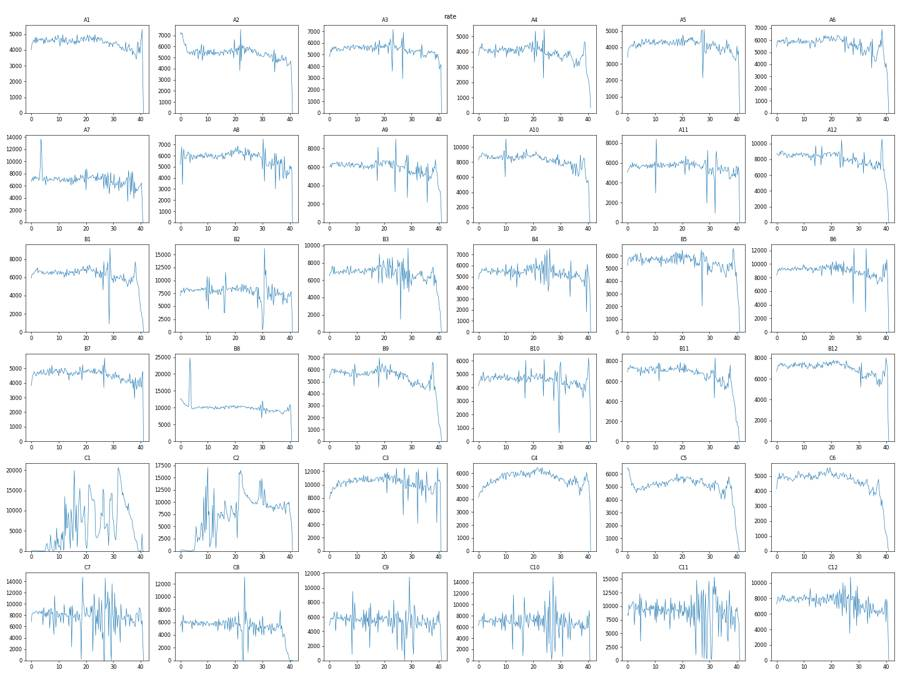
22
tool output
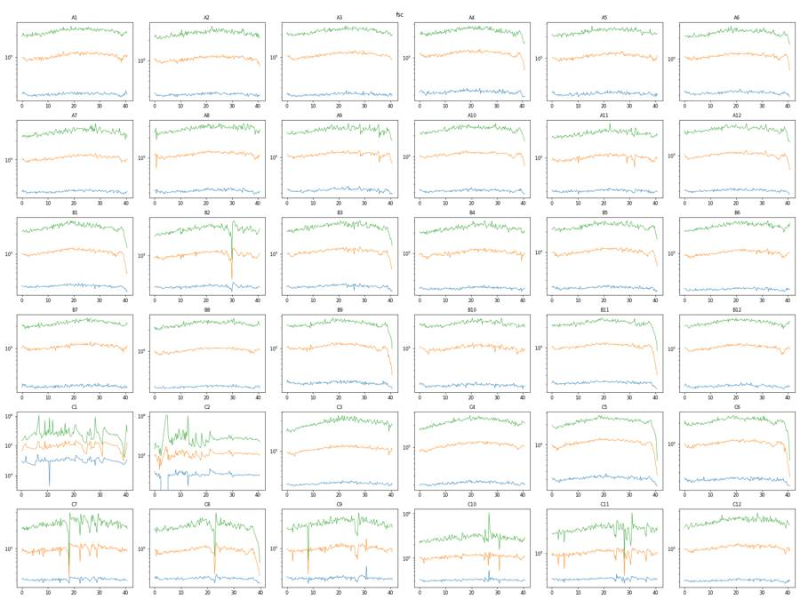
24
tool call · Bash
cat > plot_sc.py <<'EOF'
from load import *
import matplotlib; matplotlib.use('Agg'); import matplotlib.pyplot as plt
from matplotlib.colors import LogNorm
D = pickle.load(open('dfs.pkl','rb'))
ws=['C10','C11','C12','C7','C8','C9','A1','B6','C1','C4','A4','B2']
fig,axs=plt.subplots(3,4,figsize=(24,18));
for ax,w in zip(axs.ravel(),ws):
df=D[w]
ax.hist2d(df['FSC-A'],df['SSC-A'],bins=[np.linspace(0,1.05e6,300),np.linspace(0,1.05e6,300)],norm=LogNorm(),cmap='jet'); ax.set_title(w)
fig.tight_layout(); fig.savefig('sc_lin.png',dpi=60); plt.close(fig)
fig,axs=plt.subplots(3,4,figsize=(24,18));
for ax,w in zip(axs.ravel(),ws):
df=D[w]; m=(df['FSC-A']>100)&(df['SSC-A']>100)
ax.hist2d(np.log10(df['FSC-A'][m]),np.log10(df['SSC-A'][m]),bins=[np.linspace(3,6.05,300),np.linspace(3,6.05,300)],norm=LogNorm(),cmap='jet'); ax.set_title(w)
fig.tight_layout(); fig.savefig('sc_log.png',dpi=60); plt.close(fig)
fig,axs=plt.subplots(3,4,figsize=(24,18));
for ax,w in zip(axs.ravel(),ws):
df=D[w]
ax.hist2d(df['FSC-A'],df['SSC-A'],bins=[np.linspace(0,4e5,300),np.linspace(0,6e5,300)],norm=LogNorm(),cmap='jet'); ax.set_title(w)
fig.tight_layout(); fig.savefig('sc_zoom.png',dpi=60); plt.close(fig)
EOF
python plot_sc.py25
tool call · Read
{
"file_path": "/task/work/sc_lin.png"
}26
tool call · Read
{
"file_path": "/task/work/sc_log.png"
}27
tool output
(Bash completed with no output)
28
tool output
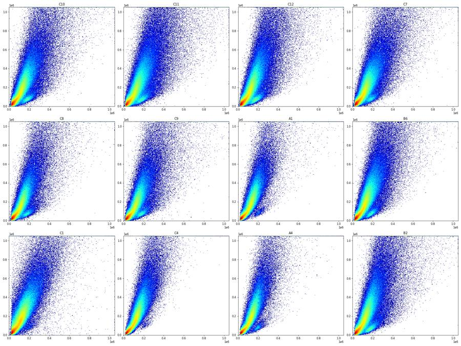
29
tool output
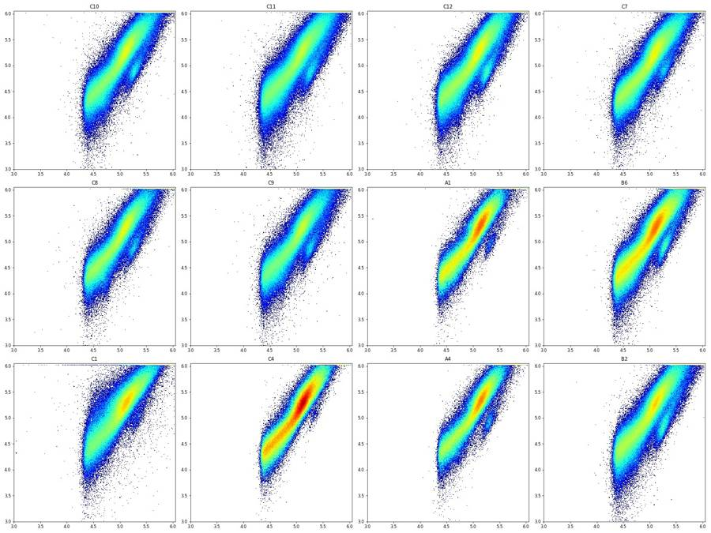
31
tool call · Bash
cat > plot_fl.py <<'EOF'
from load import *
import matplotlib; matplotlib.use('Agg'); import matplotlib.pyplot as plt
from matplotlib.colors import LogNorm
import sys
D = pickle.load(open('dfs.pkl','rb'))
def asinh(x,c=150): return np.arcsinh(x/c)
ticks=[-1000,0,1000,1e4,1e5,1e6]
def flplot(ws,fn,mask=None,shape=(3,4)):
fig,axs=plt.subplots(*shape,figsize=(6*shape[1],6*shape[0]))
for ax,w in zip(axs.ravel(),ws):
df=D[w]
if mask is not None: df=df[mask(df)]
ax.hist2d(asinh(df['BL1-A']),asinh(df['RL3-A']),bins=[np.linspace(asinh(-2000),asinh(1.1e6),250)]*2,norm=LogNorm(),cmap='jet'); ax.set_title(f'{w} n={len(df)}')
ax.set_xticks(asinh(np.array(ticks))); ax.set_xticklabels([f'{t:g}' for t in ticks]); ax.set_yticks(asinh(np.array(ticks))); ax.set_yticklabels([f'{t:g}' for t in ticks])
ax.grid(alpha=0.3)
fig.tight_layout(); fig.savefig(fn,dpi=60); plt.close(fig)
if __name__=='__main__':
flplot(['C10','C11','C12','C7','C8','C9','C4','C5','C6','A1','B6','B2'],'fl_all.png')
m=lambda df:(df['FSC-A']>60000)&(df['FSC-A']<1e6)&(df['SSC-A']<1e6)
flplot(['C10','C11','C12','C7','C8','C9','C4','C5','C6','A1','B6','B2'],'fl_fsc60.png',m)
EOF
python plot_fl.py32
tool call · Read
{
"file_path": "/task/work/fl_all.png"
}33
tool call · Read
{
"file_path": "/task/work/fl_fsc60.png"
}34
tool output
(Bash completed with no output)
35
tool output
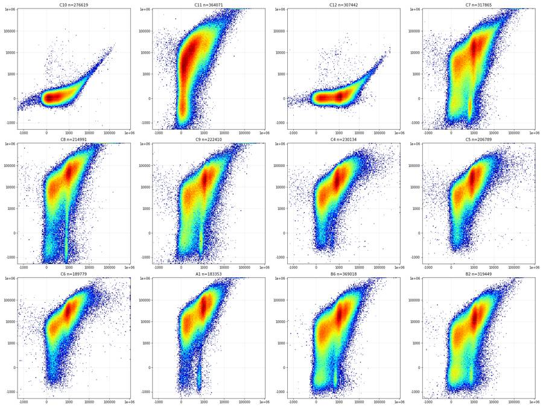
36
tool output
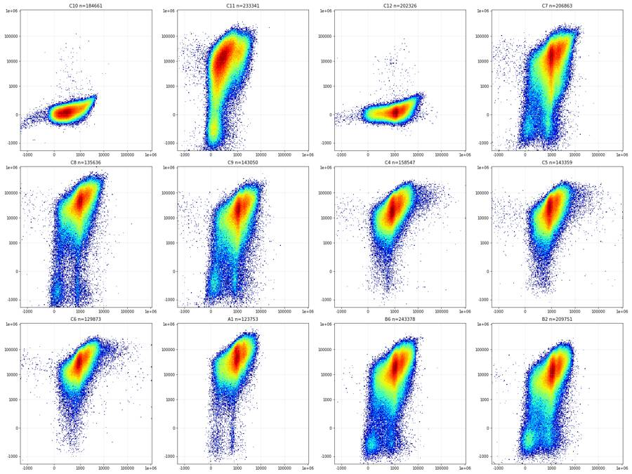
38
tool call · Bash
cat > plot_bg.py <<'EOF'
from load import *
import matplotlib; matplotlib.use('Agg'); import matplotlib.pyplot as plt
from matplotlib.colors import LogNorm
D = pickle.load(open('dfs.pkl','rb'))
# backgating: scatter of RL3 classes
for w in ['C11','C7','A1']:
df=D[w]
cls={'RL3<800':df['RL3-A']<800,'800-5000':(df['RL3-A']>=800)&(df['RL3-A']<5000),'5000-3e4':(df['RL3-A']>=5000)&(df['RL3-A']<3e4),'>3e4':df['RL3-A']>=3e4}
fig,axs=plt.subplots(2,4,figsize=(24,12))
for j,(k,m) in enumerate(cls.items()):
s=df[m]
axs[0,j].hist2d(s['FSC-A'],s['SSC-A'],bins=[np.linspace(0,6e5,200),np.linspace(0,1.05e6,200)],norm=LogNorm(),cmap='jet'); axs[0,j].set_title(f'{w} {k} n={len(s)} ({100*len(s)/len(df):.1f}%)')
mm=(s['FSC-A']>100)&(s['SSC-A']>100)
axs[1,j].hist2d(np.log10(s['FSC-A'][mm]),np.log10(s['SSC-A'][mm]),bins=[np.linspace(4.2,6.05,200),np.linspace(3.5,6.05,200)],norm=LogNorm(),cmap='jet')
fig.tight_layout(); fig.savefig(f'bg_{w}.png',dpi=55); plt.close(fig)
EOF
python plot_bg.py39
tool call · Read
{
"file_path": "/task/work/bg_C11.png"
}40
tool call · Read
{
"file_path": "/task/work/bg_C7.png"
}41
tool output
(Bash completed with no output)
42
tool output
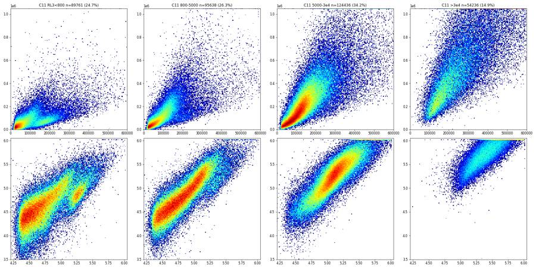
43
tool output
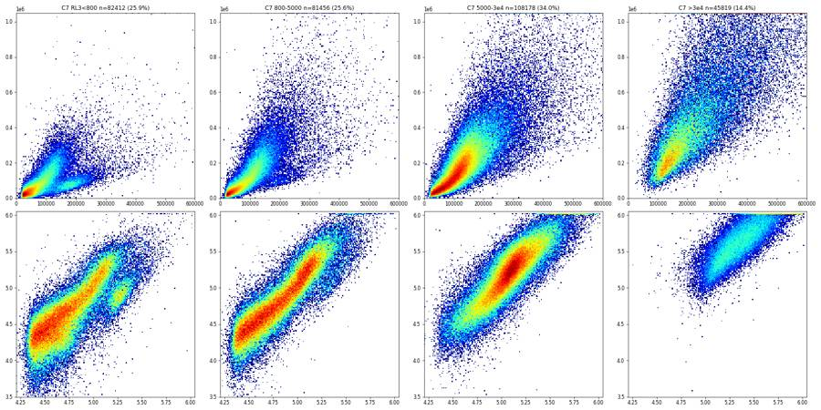
45
thinking
QC traces are done, with C1/C2 showing interrupted flow and several wells trailing off at the end. I'm now locating the cell cluster and fluorescence boundaries from the controls before building the gates.
46
tool call · Bash
cat > h1.py <<'EOF'
from load import *
import matplotlib; matplotlib.use('Agg'); import matplotlib.pyplot as plt
D = pickle.load(open('dfs.pkl','rb'))
fig,axs=plt.subplots(2,3,figsize=(24,12))
ws=['C10','C11','C12','C7','A1','B6','C4']
for w in ws:
df=D[w]
axs[0,0].hist(df['FSC-A'],bins=np.linspace(0,4e5,300),histtype='step',density=True,label=w)
axs[0,1].hist(np.log10(df['FSC-A'].clip(1)),bins=np.linspace(4.2,6.05,300),histtype='step',density=True,label=w)
axs[0,2].hist(np.log10(df['SSC-A'].clip(1)),bins=np.linspace(3.5,6.05,300),histtype='step',density=True,label=w)
m=(df['FSC-A']>60000)&(df['FSC-A']<1.04e6)&(df['SSC-A']<1.04e6)
axs[1,0].hist(np.arcsinh(df['BL1-A'][m]/150),bins=np.linspace(-3,9,400),histtype='step',density=True,label=w)
axs[1,1].hist(np.arcsinh(df['RL3-A'][m]/150),bins=np.linspace(-4,10,400),histtype='step',density=True,label=w)
for ax in axs[1,:2]:
t=np.array([-1000,-300,0,300,1000,3000,1e4,1e5,1e6]); ax.set_xticks(np.arcsinh(t/150)); ax.set_xticklabels([f'{x:g}' for x in t]); ax.grid(alpha=.3)
axs[0,0].legend(); axs[1,0].set_title('BL1 (FSC>60k)'); axs[1,1].set_title('RL3 (FSC>60k)')
fig.tight_layout(); fig.savefig('h1.png',dpi=60)
EOF
python h1.py47
tool call · Read
{
"file_path": "/task/work/h1.png"
}48
tool output
(Bash completed with no output)
49
tool output
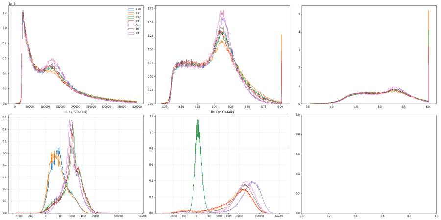
51
tool call · Bash
cat > t2.py <<'EOF'
from load import *
import matplotlib; matplotlib.use('Agg'); import matplotlib.pyplot as plt
from matplotlib.colors import LogNorm
D = pickle.load(open('dfs.pkl','rb'))
ws=['C7','C8','C12','A1','B6','C11']
fig,axs=plt.subplots(4,6,figsize=(36,24))
a=lambda x:np.arcsinh(x/150)
t=np.array([-1000,-300,0,300,1000,3000,1e4,1e5,1e6])
for j,w in enumerate(ws):
df=D[w]; m=(df['FSC-A']>60000)
s=df[m]
lo=s[s['RL3-A']<500] if w!='C12' else s
axs[0,j].hist2d(lo.Time,a(lo['BL1-A']),bins=[np.linspace(0,41,160),np.linspace(-3,8,200)],norm=LogNorm(),cmap='jet'); axs[0,j].set_title(f'{w} RL3<500 BL1 vs time n={len(lo)}')
axs[0,j].set_yticks(a(t)); axs[0,j].set_yticklabels([f'{x:g}' for x in t])
axs[1,j].hist2d(s.Time,a(s['RL3-A']),bins=[np.linspace(0,41,160),np.linspace(-4,10,200)],norm=LogNorm(),cmap='jet'); axs[1,j].set_title('RL3 vs time')
axs[1,j].set_yticks(a(t)); axs[1,j].set_yticklabels([f'{x:g}' for x in t])
A=lo[lo['BL1-A']<500]; B=lo[(lo['BL1-A']>=600)&(lo['BL1-A']<1300)]
axs[2,j].hist2d(A['FSC-A'],A['SSC-A'],bins=[np.linspace(0,6e5,150),np.linspace(0,6e5,150)],norm=LogNorm(),cmap='jet'); axs[2,j].set_title(f'A: BL1<500 n={len(A)}')
axs[3,j].hist2d(B['FSC-A'],B['SSC-A'],bins=[np.linspace(0,6e5,150),np.linspace(0,6e5,150)],norm=LogNorm(),cmap='jet'); axs[3,j].set_title(f'B: BL1 600-1300 n={len(B)}')
fig.tight_layout(); fig.savefig('t2.png',dpi=50)
EOF
python t2.py52
tool call · Read
{
"file_path": "/task/work/t2.png"
}53
tool output
(Bash completed with no output)
54
tool output
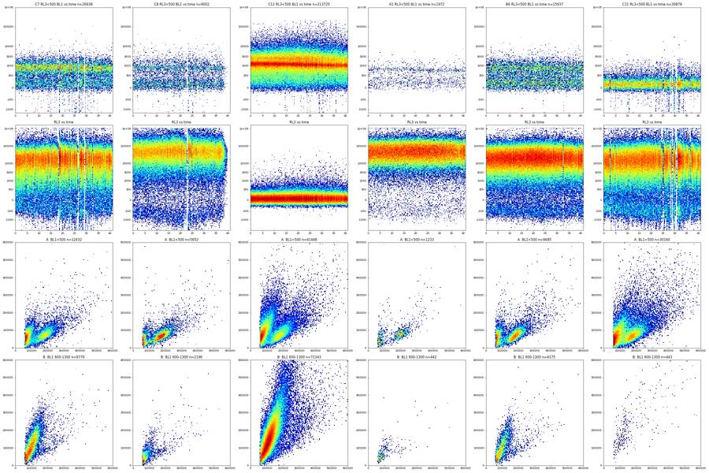
56
tool call · Read
{
"file_path": "/task/work/sc_zoom.png"
}57
tool output
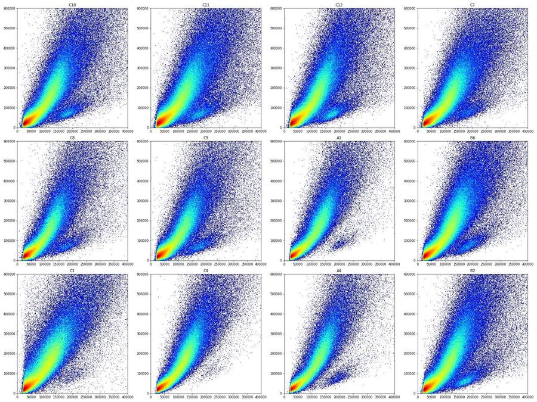
59
tool call · Bash
cat > sing.py <<'EOF'
from load import *
import matplotlib; matplotlib.use('Agg'); import matplotlib.pyplot as plt
from matplotlib.colors import LogNorm
D = pickle.load(open('dfs.pkl','rb'))
ws=['C10','C11','C12','C7','A1','B6','C1','C4']
fig,axs=plt.subplots(3,8,figsize=(48,18))
for j,w in enumerate(ws):
df=D[w]; s=df[(df['FSC-A']>70000)&(df['FSC-A']<1.0e6)&(df['SSC-A']<1.0e6)]
axs[0,j].hist2d(s['SSC-H'],s['SSC-A'],bins=[np.linspace(0,1.05e6,300),np.linspace(0,1.05e6,300)],norm=LogNorm(),cmap='jet'); axs[0,j].set_title(w)
axs[0,j].plot([0,1e6],[0,1e6],'k-',lw=0.5)
r=s['SSC-A']/s['SSC-H'].clip(1)
axs[1,j].hist2d(s['SSC-H'],r,bins=[np.linspace(0,1.05e6,300),np.linspace(0.5,3,300)],norm=LogNorm(),cmap='jet'); axs[1,j].set_title('A/H ratio vs H')
axs[2,j].hist(r,bins=np.linspace(0.8,2.5,300)); axs[2,j].set_yscale('log')
print(w, 'SSC-H sat %',(s['SSC-H']>=1048575).mean()*100, 'ratio pct 1,5,50,90,95,99', np.percentile(r,[1,5,50,90,95,99]).round(3), 'SSC-W pct', np.percentile(s['SSC-W'],[1,50,95,99]))
fig.tight_layout(); fig.savefig('sing.png',dpi=45)
EOF
python sing.py60
tool call · Read
{
"file_path": "/task/work/sing.png"
}61
tool output
C10 SSC-H sat % 0.0 ratio pct 1,5,50,90,95,99 [0.878 0.991 1.174 1.802 2.087 2.724] SSC-W pct [ 51. 93. 162. 211.] C11 SSC-H sat % 0.0 ratio pct 1,5,50,90,95,99 [0.81 0.978 1.201 1.897 2.185 2.855] SSC-W pct [ 47. 94. 171. 227.] C12 SSC-H sat % 0.0 ratio pct 1,5,50,90,95,99 [0.905 0.992 1.181 1.803 2.076 2.688] SSC-W pct [ 53. 93. 162. 212.] C7 SSC-H sat % 0.0 ratio pct 1,5,50,90,95,99 [0.877 0.99 1.178 1.852 2.141 2.788] SSC-W pct [ 51. 92. 167. 220.] A1 SSC-H sat % 0.0 ratio pct 1,5,50,90,95,99 [0.99 1.031 1.179 1.605 1.849 2.357] SSC-W pct [ 72. 93. 141. 184.] B6 SSC-H sat % 0.0 ratio pct 1,5,50,90,95,99 [0.938 0.997 1.168 1.757 2.031 2.594] SSC-W pct [ 59. 92. 162. 210.] C1 SSC-H sat % 0.0 ratio pct 1,5,50,90,95,99 [0.593 0.98 1.169 1.832 2.122 2.827] SSC-W pct [ 45. 92. 162. 211.28] C4 SSC-H sat % 0.0 ratio pct 1,5,50,90,95,99 [0.973 1.012 1.153 1.603 1.855 2.349] SSC-W pct [ 72. 92. 145. 186.]
62
tool output
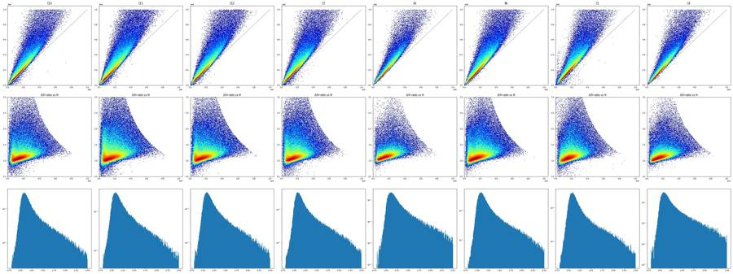
64
agent
Status: scatter and singlet structure are mapped; now setting the Zombie NIR and CellEvent boundaries on the single-stain controls, then I'll build and save the FlowKit gates.
65
tool call · Bash
cat > g.py <<'EOF'
from load import *
from matplotlib.path import Path
CELLS=[(70000,8000),(70000,200000),(160000,600000),(330000,1000000),(1000000,1000000),(1000000,420000),(420000,90000),(180000,22000),(110000,8000)]
SING=[(0,0),(1.0e4,2.0e4),(1.5e5,2.2e5),(7.2e5,1.0e6),(9.2e5,1.0e6),(1.0e6,0.9e6),(2.0e4,0)]
def inpoly(df,xc,yc,verts):
return Path(verts).contains_points(df[[xc,yc]].values)
def base(df):
c=inpoly(df,'FSC-A','SSC-A',CELLS); s=c&inpoly(df,'SSC-H','SSC-A',SING)
return c,s
if __name__=='__main__':
D = pickle.load(open('dfs.pkl','rb'))
for w in ['C10','C11','C12','C7','C8','C9','A1','B6','C4']:
df=D[w]; c,s=base(df)
print(w,len(df),'cells%',round(100*c.mean(),1),'sing%ofcells',round(100*s.sum()/c.sum(),1))
EOF
python g.py66
tool output
C10 276619 cells% 60.9 sing%ofcells 77.4 C11 364071 cells% 57.9 sing%ofcells 73.1 C12 307442 cells% 59.8 sing%ofcells 77.1 C7 317865 cells% 59.1 sing%ofcells 75.8 C8 214991 cells% 56.8 sing%ofcells 79.8 C9 222410 cells% 58.1 sing%ofcells 77.7 A1 183353 cells% 61.7 sing%ofcells 83.5 B6 369018 cells% 60.2 sing%ofcells 79.2 C4 230134 cells% 63.1 sing%ofcells 84.1
68
tool call · Bash
cat > fl2.py <<'EOF'
from g import *
import matplotlib; matplotlib.use('Agg'); import matplotlib.pyplot as plt
from matplotlib.colors import LogNorm
D = pickle.load(open('dfs.pkl','rb'))
a=lambda x:np.arcsinh(np.asarray(x)/150)
t=np.array([-1000,-300,0,300,1000,3000,1e4,1e5,1e6])
ws=['C10','C11','C12','C7','C8','C9','A1','B6','B2','C4','C5','C6']
S={w:D[w][base(D[w])[1]] for w in ws}
fig,axs=plt.subplots(3,4,figsize=(28,21))
for ax,w in zip(axs.ravel(),ws):
s=S[w]
ax.hist2d(a(s['BL1-A']),a(s['RL3-A']),bins=[np.linspace(a(-1500),a(1.1e6),220),np.linspace(a(-3000),a(1.1e6),220)],norm=LogNorm(),cmap='jet'); ax.set_title(f'{w} singlets n={len(s)}')
ax.set_xticks(a(t)); ax.set_xticklabels([f'{x:g}' for x in t]); ax.set_yticks(a(t)); ax.set_yticklabels([f'{x:g}' for x in t]); ax.grid(alpha=.4)
fig.tight_layout(); fig.savefig('fl_sing.png',dpi=55); plt.close(fig)
fig,axs=plt.subplots(2,2,figsize=(24,14))
for w in ['C10','C11','C12','C7','C8','C9','A1','B6']:
s=S[w]
axs[0,0].hist(a(s['RL3-A']),bins=np.linspace(a(-3000),a(1e6),300),histtype='step',label=w,density=True)
lo=s[s['RL3-A']<600]
axs[0,1].hist(a(lo['BL1-A']),bins=np.linspace(a(-500),a(1e5),200),histtype='step',label=f'{w} n={len(lo)}',density=True)
axs[1,0].hist(a(s['BL1-A']),bins=np.linspace(a(-500),a(1e5),300),histtype='step',label=w,density=True)
hi=s[s['RL3-A']>5000]
axs[1,1].hist(a(hi['BL1-A']),bins=np.linspace(a(-500),a(1e5),200),histtype='step',label=f'{w} n={len(hi)}',density=True)
for ax,tt in zip(axs.ravel(),['RL3 singlets','BL1 in RL3<600','BL1 singlets','BL1 in RL3>5000']):
ax.set_xticks(a(t)); ax.set_xticklabels([f'{x:g}' for x in t]); ax.grid(alpha=.4); ax.legend(); ax.set_title(tt)
axs[0,0].set_yscale('log')
fig.tight_layout(); fig.savefig('fl_h.png',dpi=55)
for w in ['C10','C11','C12']:
s=S[w]
print(w,'RL3 pct 0.1,1,5,50,95,99,99.9',np.percentile(s['RL3-A'],[0.1,1,5,50,95,99,99.9]).round(0))
print(w,'BL1 pct 0.1,1,5,50,95,99,99.9',np.percentile(s['BL1-A'],[0.1,1,5,50,95,99,99.9]).round(0))
s=S['C11']; lo=s[s['RL3-A']<600]; print('C11 live BL1 pct 50,90,95,99,99.5',np.percentile(lo['BL1-A'],[50,90,95,99,99.5]).round(0), len(lo))
EOF
python fl2.py69
tool call · Read
{
"file_path": "/task/work/fl_sing.png"
}70
tool call · Read
{
"file_path": "/task/work/fl_h.png"
}71
tool output
C10 RL3 pct 0.1,1,5,50,95,99,99.9 [-136. -94. -58. 28. 127. 179. 268.] C10 BL1 pct 0.1,1,5,50,95,99,99.9 [-141. -22. 30. 230. 1174. 1863. 2678.] C11 RL3 pct 0.1,1,5,50,95,99,99.9 [ -4031. -742. -198. 8216. 44603. 76027. 125598.] C11 BL1 pct 0.1,1,5,50,95,99,99.9 [-256. -32. 18. 194. 1153. 1838. 2711.] C12 RL3 pct 0.1,1,5,50,95,99,99.9 [-137. -95. -60. 26. 123. 175. 279.] C12 BL1 pct 0.1,1,5,50,95,99,99.9 [-7.700e+01 1.000e+00 1.000e+02 1.058e+03 2.729e+03 4.034e+03 6.488e+03] C11 live BL1 pct 50,90,95,99,99.5 [ 66. 195. 284. 816. 1076.] 22342
72
tool output
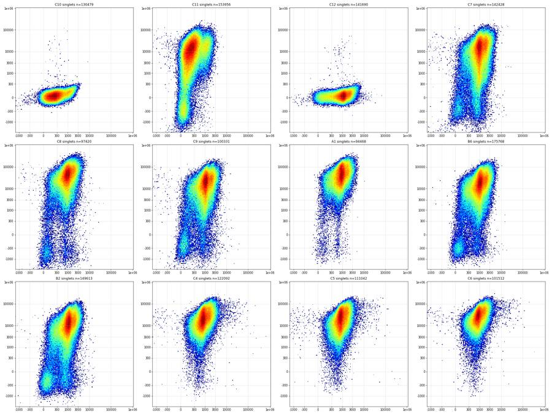
73
tool output
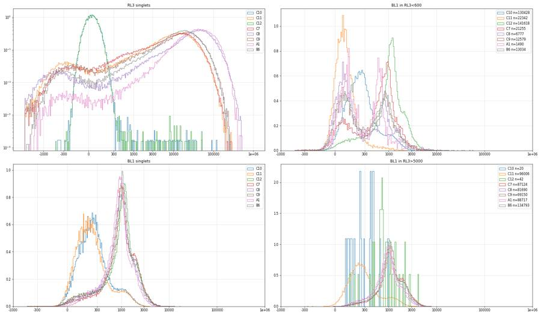
75
tool call · Bash
cat > val.py <<'EOF'
from g import *
from scipy.ndimage import gaussian_filter1d
D = pickle.load(open('dfs.pkl','rb'))
order = [r+str(i) for r in 'ABC' for i in range(1,13)]
a=lambda x:np.arcsinh(np.asarray(x)/150)
ia=lambda y:150*np.sinh(y)
S={w:D[w][base(D[w])[1]] for w in order}
pickle.dump(S,open('sing.pkl','wb'))
def valley(x,lo,hi,sig=3,nb=200):
b=np.linspace(a(lo),a(hi),nb); h,_=np.histogram(a(x),bins=b); hs=gaussian_filter1d(h.astype(float),sig)
i=hs.argmin(); return ia((b[i]+b[i+1])/2), hs[i]
print('RL3 valley (search 50..3000) and BL1 valley among RL3<600 (search 150..900)')
for w in order:
s=S[w]; r=s['RL3-A']
v1=valley(r,50,3000)
lo=s[r<600]; v2=valley(lo['BL1-A'],150,900)
fr=[(r<t).mean()*100 for t in [300,600,1000,2000,3000,5000]]
print(w,len(s),'RL3 valley %.0f'%v1[0],'| BL1 valley(live) %.0f'%v2[0],'n_live',len(lo),'| %RL3<300,600,1000,2000,3000,5000',np.round(fr,1))
for w in ['C10','C12','C11']:
s=S[w]; print(w,'singlets BL1: %<300,400,450,500,600,800:',[round((s['BL1-A']<t).mean()*100,1) for t in [300,400,450,500,600,800]])
s=S['C11']; print('C11 live(RL3<600) BL1 %>',[ (t,round((s[s['RL3-A']<600]['BL1-A']>t).mean()*100,2)) for t in [300,400,450,500,600]])
print('C11 RL3>3000 BL1 %>',[ (t,round((s[s['RL3-A']>3000]['BL1-A']>t).mean()*100,2)) for t in [300,400,450,500,600,1000]])
s=S['C12']; print('C12 BL1 valley', valley(s['BL1-A'],100,900))
# extreme negatives
for w in ['C7','C11','B6']:
s=S[w]; print(w,'singlets RL3<-3000:',(s['RL3-A']<-3000).sum(),'<-10000:',(s['RL3-A']<-10000).sum(),'BL1<-1000',(s['BL1-A']<-1000).sum(), 'RL3 pct .1,.5,1',np.percentile(s['RL3-A'],[.1,.5,1]).round(0))
EOF
python val.py76
tool output
RL3 valley (search 50..3000) and BL1 valley among RL3<600 (search 150..900) A1 94468 RL3 valley 68 | BL1 valley(live) 371 n_live 1490 | %RL3<300,600,1000,2000,3000,5000 [1.3 1.6 2. 3. 3.9 6.1] A2 109066 RL3 valley 70 | BL1 valley(live) 457 n_live 5479 | %RL3<300,600,1000,2000,3000,5000 [ 4.5 5. 5.6 6.9 7.9 10. ] A3 120238 RL3 valley 97 | BL1 valley(live) 247 n_live 4973 | %RL3<300,600,1000,2000,3000,5000 [ 2.9 4.1 5.8 9. 11.5 15.6] A4 87400 RL3 valley 88 | BL1 valley(live) 896 n_live 3178 | %RL3<300,600,1000,2000,3000,5000 [ 3. 3.6 4.4 6.4 8.3 12.7] A5 89223 RL3 valley 115 | BL1 valley(live) 311 n_live 5487 | %RL3<300,600,1000,2000,3000,5000 [ 4.7 6.1 7.5 10.5 13.6 20.8] A6 124107 RL3 valley 97 | BL1 valley(live) 311 n_live 9564 | %RL3<300,600,1000,2000,3000,5000 [ 6.8 7.7 8.7 10.8 12.4 15.2] A7 136339 RL3 valley 100 | BL1 valley(live) 365 n_live 10041 | %RL3<300,600,1000,2000,3000,5000 [ 6.6 7.4 8.2 10. 11.6 14.5] A8 118910 RL3 valley 100 | BL1 valley(live) 328 n_live 13377 | %RL3<300,600,1000,2000,3000,5000 [ 9.7 11.2 12.9 16.1 18.6 22.6] A9 126147 RL3 valley 59 | BL1 valley(live) 381 n_live 7976 | %RL3<300,600,1000,2000,3000,5000 [ 5.7 6.3 7. 8.4 9.6 11.7] A10 167372 RL3 valley 65 | BL1 valley(live) 303 n_live 6763 | %RL3<300,600,1000,2000,3000,5000 [ 3.6 4. 4.7 6.2 7.6 10.4] A11 112268 RL3 valley 145 | BL1 valley(live) 381 n_live 8077 | %RL3<300,600,1000,2000,3000,5000 [ 6. 7.2 8.4 10.7 12.6 16.2] A12 159909 RL3 valley 65 | BL1 valley(live) 368 n_live 8917 | %RL3<300,600,1000,2000,3000,5000 [ 4.8 5.6 6.4 8.5 10.3 13.9] B1 123751 RL3 valley 106 | BL1 valley(live) 308 n_live 11761 | %RL3<300,600,1000,2000,3000,5000 [ 8.3 9.5 10.8 13.7 16. 19.8] B2 149613 RL3 valley 145 | BL1 valley(live) 328 n_live 20502 | %RL3<300,600,1000,2000,3000,5000 [11.3 13.7 16. 20.6 25. 34. ] B3 135748 RL3 valley 73 | BL1 valley(live) 303 n_live 15934 | %RL3<300,600,1000,2000,3000,5000 [10. 11.7 13.6 17.3 20.5 26.5] B4 109298 RL3 valley 132 | BL1 valley(live) 227 n_live 4687 | %RL3<300,600,1000,2000,3000,5000 [ 3.6 4.3 5.1 7. 8.8 12.6] B5 110951 RL3 valley 51 | BL1 valley(live) 282 n_live 7057 | %RL3<300,600,1000,2000,3000,5000 [ 5.2 6.4 7.7 10.5 13.4 19.7] B6 175768 RL3 valley 59 | BL1 valley(live) 311 n_live 13034 | %RL3<300,600,1000,2000,3000,5000 [ 5.8 7.4 9.3 13.2 16.6 23.3] B7 99621 RL3 valley 128 | BL1 valley(live) 328 n_live 4114 | %RL3<300,600,1000,2000,3000,5000 [ 3.2 4.1 5.2 7.5 9.9 15.3] B8 199921 RL3 valley 68 | BL1 valley(live) 247 n_live 9442 | %RL3<300,600,1000,2000,3000,5000 [ 3.4 4.7 6.5 10.7 14.9 23.4] B9 112069 RL3 valley 112 | BL1 valley(live) 282 n_live 4888 | %RL3<300,600,1000,2000,3000,5000 [ 3.5 4.4 5.4 7.5 9.8 14.4] B10 96810 RL3 valley 106 | BL1 valley(live) 381 n_live 3614 | %RL3<300,600,1000,2000,3000,5000 [ 3.1 3.7 4.5 6.3 8.1 11.6] B11 140503 RL3 valley 76 | BL1 valley(live) 259 n_live 7191 | %RL3<300,600,1000,2000,3000,5000 [ 3.9 5.1 6.5 9.4 12.3 18.9] B12 147985 RL3 valley 94 | BL1 valley(live) 279 n_live 7144 | %RL3<300,600,1000,2000,3000,5000 [ 3.5 4.8 6.3 10.1 14.4 23.8] C1 122672 RL3 valley 91 | BL1 valley(live) 896 n_live 2550 | %RL3<300,600,1000,2000,3000,5000 [1.8 2.1 2.4 3.3 4.2 6.3] C2 153197 RL3 valley 57 | BL1 valley(live) 266 n_live 6500 | %RL3<300,600,1000,2000,3000,5000 [ 3.6 4.2 5.1 7.2 9. 12.8] C3 199874 RL3 valley 68 | BL1 valley(live) 225 n_live 13383 | %RL3<300,600,1000,2000,3000,5000 [ 4.9 6.7 8.8 13.9 18.8 28.4] C4 122092 RL3 valley 51 | BL1 valley(live) 249 n_live 1520 | %RL3<300,600,1000,2000,3000,5000 [ 0.8 1.2 1.9 3.6 5.9 11.2] C5 111042 RL3 valley 68 | BL1 valley(live) 170 n_live 1805 | %RL3<300,600,1000,2000,3000,5000 [ 0.9 1.6 2.6 5. 8. 14.5] C6 101512 RL3 valley 79 | BL1 valley(live) 151 n_live 1045 | %RL3<300,600,1000,2000,3000,5000 [0.6 1. 1.5 2.6 3.9 7.1] C7 142428 RL3 valley 70 | BL1 valley(live) 242 n_live 21255 | %RL3<300,600,1000,2000,3000,5000 [10.9 14.9 18.9 25.7 30.7 38.8] C8 97420 RL3 valley 97 | BL1 valley(live) 274 n_live 6777 | %RL3<300,600,1000,2000,3000,5000 [ 6.1 7. 8. 10.4 12.6 16.1] C9 100331 RL3 valley 51 | BL1 valley(live) 303 n_live 12579 | %RL3<300,600,1000,2000,3000,5000 [10.1 12.5 15.2 20.4 24.4 31.1] C10 130479 RL3 valley 1460 | BL1 valley(live) 839 n_live 130428 | %RL3<300,600,1000,2000,3000,5000 [ 99.9 100. 100. 100. 100. 100. ] C11 153956 RL3 valley 65 | BL1 valley(live) 896 n_live 22342 | %RL3<300,600,1000,2000,3000,5000 [11.7 14.5 17.6 23.7 28.7 37.6] C12 141690 RL3 valley 1341 | BL1 valley(live) 172 n_live 141618 | %RL3<300,600,1000,2000,3000,5000 [ 99.9 99.9 100. 100. 100. 100. ] C10 singlets BL1: %<300,400,450,500,600,800: [64.2, 76.7, 80.3, 82.8, 86.3, 90.2] C12 singlets BL1: %<300,400,450,500,600,800: [13.0, 16.3, 18.0, 19.7, 23.5, 32.7] C11 singlets BL1: %<300,400,450,500,600,800: [70.4, 80.3, 83.1, 85.2, 87.9, 91.1] C11 live(RL3<600) BL1 %> [(300, 4.55), (400, 3.03), (450, 2.65), (500, 2.27), (600, 1.75)] C11 RL3>3000 BL1 %> [(300, 36.7), (400, 24.36), (450, 20.88), (500, 18.39), (600, 15.05), (1000, 8.36)] C12 BL1 valley (116.48322846060324, 110.34004058863434) C7 singlets RL3<-3000: 184 <-10000: 45 BL1<-1000 67 RL3 pct .1,.5,1 [-3774. -850. -555.] C11 singlets RL3<-3000: 195 <-10000: 45 BL1<-1000 32 RL3 pct .1,.5,1 [-4031. -1075. -742.] B6 singlets RL3<-3000: 6 <-10000: 2 BL1<-1000 3 RL3 pct .1,.5,1 [-1047. -600. -436.]
78
thinking
Gate boundaries are set from the controls (Live below 600, CellEvent-positive above 400 on BL1-A, Zombie-bright above 3000 on RL3-A); I'm building the FlowKit strategy and saving gates.xml next, then finalizing the QC flags.
79
tool call · Bash
cat > build.py <<'EOF'
from load import *
import flowkit as fk
from flowkit import Dimension, GatingStrategy
from flowkit.gates import RectangleGate, PolygonGate
from flowkit.transforms import LogicleTransform
CELLS=[(70000,8000),(70000,200000),(160000,600000),(330000,1000000),(1000000,1000000),(1000000,420000),(420000,90000),(180000,22000),(110000,8000)]
SING=[(0,0),(1.0e4,2.0e4),(1.5e5,2.2e5),(7.2e5,1.0e6),(9.2e5,1.0e6),(1.0e6,0.9e6),(2.0e4,0)]
RL3_LIVE_MAX=600.; BL1_POS_MIN=400.; RL3_LATE_MIN=3000.
LO=-200000.; HI=2000000. # beyond the recorded range on both fluorescence axes (data: -65536 .. 1048575)
xf=LogicleTransform(param_t=1048576, param_w=1.0, param_m=4.5, param_a=0)
T=lambda v: float(xf.apply(np.array([v],dtype=float))[0])
def build():
gs=GatingStrategy()
gs.add_transform('logicle',xf)
d=lambda ch,**k: Dimension(ch,compensation_ref='uncompensated',**k)
dl=lambda ch,**k: Dimension(ch,compensation_ref='uncompensated',transformation_ref='logicle',**k)
gs.add_gate(PolygonGate('Cells',[d('FSC-A'),d('SSC-A')],CELLS),gate_path=('root',))
gs.add_gate(PolygonGate('Single_Cells',[d('SSC-H'),d('SSC-A')],SING),gate_path=('root','Cells'))
gs.add_gate(RectangleGate('Live',[dl('BL1-A',range_min=T(LO),range_max=T(HI)),dl('RL3-A',range_min=T(LO),range_max=T(RL3_LIVE_MAX))]),gate_path=('root','Cells','Single_Cells'))
gs.add_gate(RectangleGate('Caspase_pos',[dl('BL1-A',range_min=T(BL1_POS_MIN),range_max=T(HI)),dl('RL3-A',range_min=T(LO),range_max=T(RL3_LIVE_MAX))]),gate_path=('root','Cells','Single_Cells','Live'))
late=[(T(BL1_POS_MIN),T(RL3_LATE_MIN)),(T(BL1_POS_MIN),T(HI)),(T(HI),T(HI)),(T(HI),T(RL3_LATE_MIN))]
gs.add_gate(PolygonGate('Late_apoptosis',[dl('BL1-A'),dl('RL3-A')],late),gate_path=('root','Cells','Single_Cells'))
return gs
if __name__=='__main__':
for v in [-200000,-65536,-1000,0,400,600,3000,1048575,2e6]: print(v,T(v))
gs=build()
os.makedirs('/task/outputs',exist_ok=True)
with open('/task/outputs/gates.xml','wb') as f: fk.export_gatingml(gs,f)
gs2=fk.parse_gating_xml('/task/outputs/gates.xml')
print(gs2.get_gate_ids())
print(gs2.get_gate_hierarchy())
EOF
python build.py && head -c 3000 /task/outputs/gates.xml80
tool output (error)
Exit code 1
Traceback (most recent call last):
File "/task/work/build.py", line 4, in <module>
from flowkit.gates import RectangleGate, PolygonGate
ModuleNotFoundError: No module named 'flowkit.gates'81
tool call · Bash
python -c " import flowkit as fk; print(fk.__version__, dir(fk)); import flowkit.gates as g; print(dir(g)) import flowkit.transforms as t; print(dir(t)) import inspect; print(inspect.signature(fk.GatingStrategy.add_gate)); print(inspect.signature(fk.Dimension.__init__)); print(inspect.signature(fk.GatingStrategy.gate_sample)); print(inspect.signature(fk.export_gatingml))"; ls; python -c "import flowkit; print(flowkit.__file__)"
82
tool output
Traceback (most recent call last): File "<string>", line 2, in <module> ModuleNotFoundError: No module named 'flowkit.gates' 1.2.3 ['Dimension', 'GatingStrategy', 'Matrix', 'QuadrantDivider', 'RatioDimension', 'Sample', 'Session', 'Workspace', '__all__', '__builtins__', '__cached__', '__doc__', '__file__', '__loader__', '__name__', '__package__', '__path__', '__spec__', '__version__', '_conf', '_models', '_resources', '_utils', '_version', 'exceptions', 'export_gatingml', 'extract_wsp_sample_data', 'gates', 'generate_transforms', 'load_samples', 'parse_gating_xml', 'parse_wsp', 'read_multi_dataset_fcs', 'transforms'] __pycache__ bg_A1.png bg_C11.png bg_C7.png build.py dfs.pkl explore.py fl2.py fl_all.png fl_fsc60.png fl_h.png fl_sing.png g.py h1.png h1.py load.py plot_bg.py plot_fl.py plot_sc.py plot_time.py qc.py qc2.py qc3.py sc_lin.png sc_log.png sc_zoom.png sing.pkl sing.png sing.py t2.png t2.py time_bl1.png time_fsc.png time_rate.png time_rl3.png val.py /usr/local/lib/python3.12/site-packages/flowkit/__init__.py
84
tool call · Bash
sed -i 's/^from flowkit.gates import RectangleGate, PolygonGate/RectangleGate, PolygonGate = fk.gates.RectangleGate, fk.gates.PolygonGate/; s/^from flowkit.transforms import LogicleTransform/LogicleTransform = fk.transforms.LogicleTransform/' build.py && python build.py && head -c 2500 /task/outputs/gates.xml
85
tool output
-200000 -0.39404159741393263
-65536 -0.2826762766967995
-1000 0.1664954795650071
0 0.2222222222222222
400 0.24479547393087683
600 0.25598258874172225
3000 0.3715574632700473
1048575 0.9999999075751472
2000000.0 1.0625130509703424
[('Cells', ('root',)), ('Single_Cells', ('root', 'Cells')), ('Live', ('root', 'Cells', 'Single_Cells')), ('Caspase_pos', ('root', 'Cells', 'Single_Cells', 'Live')), ('Late_apoptosis', ('root', 'Cells', 'Single_Cells'))]
root
╰── Cells
╰── Single_Cells
├── Live
│ ╰── Caspase_pos
╰── Late_apoptosis
<?xml version='1.0' encoding='UTF-8'?>
<gating:Gating-ML xmlns:gating="http://www.isac-net.org/std/Gating-ML/v2.0/gating" xmlns:data-type="http://www.isac-net.org/std/Gating-ML/v2.0/datatypes" xmlns:transforms="http://www.isac-net.org/std/Gating-ML/v2.0/transformations">
<transforms:transformation transforms:id="logicle">
<transforms:logicle transforms:T="1048576" transforms:W="1.0" transforms:M="4.5" transforms:A="0"/>
</transforms:transformation>
<gating:PolygonGate gating:id="Cells">
<gating:dimension gating:compensation-ref="uncompensated">
<data-type:fcs-dimension data-type:name="FSC-A"/>
</gating:dimension>
<gating:dimension gating:compensation-ref="uncompensated">
<data-type:fcs-dimension data-type:name="SSC-A"/>
</gating:dimension>
<gating:vertex>
<gating:coordinate data-type:value="70000"/>
<gating:coordinate data-type:value="8000"/>
</gating:vertex>
<gating:vertex>
<gating:coordinate data-type:value="70000"/>
<gating:coordinate data-type:value="200000"/>
</gating:vertex>
<gating:vertex>
<gating:coordinate data-type:value="160000"/>
<gating:coordinate data-type:value="600000"/>
</gating:vertex>
<gating:vertex>
<gating:coordinate data-type:value="330000"/>
<gating:coordinate data-type:value="1000000"/>
</gating:vertex>
<gating:vertex>
<gating:coordinate data-type:value="1000000"/>
<gating:coordinate data-type:value="1000000"/>
</gating:vertex>
<gating:vertex>
<gating:coordinate data-type:value="1000000"/>
<gating:coordinate data-type:value="420000"/>
</gating:vertex>
<gating:vertex>
<gating:coordinate data-type:value="420000"/>
<gating:coordinate data-type:value="90000"/>
</gating:vertex>
<gating:vertex>
<gating:coordinate data-type:value="180000"/>
<gating:coordinate data-type:value="22000"/>
</gating:vertex>
<gating:vertex>
<gating:coordinate data-type:value="110000"/>
<gating:coordinate data-type:value="8000"/>
</gating:vertex>
</gating:PolygonGate>
<gating:PolygonGate gating:id="Single_Cells" gating:parent_id="Cells">
<gating:dimension gating:compensation-ref="uncompensated">
<data-type:fcs-dimension data-type:name="SSC-H"/>
</gating:dimension>
<gating:dimension gating:compensation-ref="uncompensated">
<data-type:fcs-dimension data-type:name="SSC-A"/>
</gating:dimension>
<gating:vertex>
<g87
tool call · Bash
cat > ov.py <<'EOF'
from load import *
from build import *
from matplotlib.path import Path
import matplotlib; matplotlib.use('Agg'); import matplotlib.pyplot as plt
from matplotlib.colors import LogNorm
D = pickle.load(open('dfs.pkl','rb'))
ws=['C10','C11','C7','A1','B6','C4']
fig,axs=plt.subplots(3,6,figsize=(42,21))
cp=np.array(CELLS+[CELLS[0]]); sp=np.array(SING+[SING[0]])
for j,w in enumerate(ws):
df=D[w]
axs[0,j].hist2d(df['FSC-A'],df['SSC-A'],bins=[np.linspace(0,1.05e6,300),np.linspace(0,1.05e6,300)],norm=LogNorm(),cmap='jet'); axs[0,j].plot(cp[:,0],cp[:,1],'k-',lw=2); axs[0,j].set_title(w)
axs[1,j].hist2d(df['FSC-A'],df['SSC-A'],bins=[np.linspace(0,4e5,300),np.linspace(0,4e5,300)],norm=LogNorm(),cmap='jet'); axs[1,j].plot(cp[:,0],cp[:,1],'k-',lw=2); axs[1,j].set_xlim(0,4e5); axs[1,j].set_ylim(0,4e5)
c=df[Path(CELLS).contains_points(df[['FSC-A','SSC-A']].values)]
axs[2,j].hist2d(c['SSC-H'],c['SSC-A'],bins=[np.linspace(0,1.05e6,300),np.linspace(0,1.05e6,300)],norm=LogNorm(),cmap='jet'); axs[2,j].plot(sp[:,0],sp[:,1],'k-',lw=1.5)
fig.tight_layout(); fig.savefig('ov.png',dpi=45)
EOF
python ov.py88
tool call · Read
{
"file_path": "/task/work/ov.png"
}89
tool output
(Bash completed with no output)
90
tool output
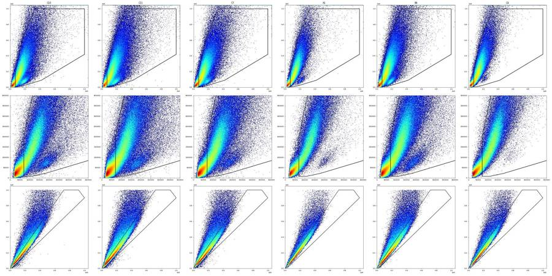
92
tool call · Bash
sed -i 's/^CELLS=.*/CELLS=[(70000,8000),(70000,260000),(140000,650000),(250000,1000000),(1000000,1000000),(1000000,420000),(420000,90000),(180000,22000),(110000,8000)]/' build.py && cat > counts.py <<'EOF'
from load import *
from build import *
import csv
gs=build()
with open('/task/outputs/gates.xml','wb') as f: fk.export_gatingml(gs,f)
gs=fk.parse_gating_xml('/task/outputs/gates.xml') # counts come from the saved, reloaded gates
lay=pd.read_csv('/task/inputs/plate_layout.csv')
pops=[('Cells','All_events',('root',)),('Single_Cells','Cells',('root','Cells')),('Live','Single_Cells',('root','Cells','Single_Cells')),('Caspase_pos','Live',('root','Cells','Single_Cells','Live')),('Late_apoptosis','Single_Cells',('root','Cells','Single_Cells'))]
rows=[]; memb={}
for _,r in lay.iterrows():
s=fk.Sample('/task/inputs/raw/'+r.file, ignore_offset_error=True)
res=gs.gate_sample(s)
n={'All_events':s.event_count}; m={}
for p,par,path in pops:
m[p]=res.get_gate_membership(p,gate_path=path); n[p]=int(m[p].sum())
assert n[p]==int(res.get_gate_count(p,gate_path=path)) if hasattr(res,'get_gate_count') else True
for p,par,path in pops:
rows.append(dict(file=r.file,well=r.well,population=p,count=n[p],parent_population=par,pct_of_parent=round(100*n[p]/n[par],4) if n[par]>0 else 0.0))
memb[r.well]=m
out=pd.DataFrame(rows,columns=['file','well','population','count','parent_population','pct_of_parent'])
out.to_csv('/task/outputs/counts.csv',index=False)
pickle.dump(memb,open('memb.pkl','wb'))
pv=out.pivot(index='well',columns='population',values='pct_of_parent')[[p[0] for p in pops]]
pc=out.pivot(index='well',columns='population',values='count')[[p[0] for p in pops]]
order=[r+str(i) for r in 'ABC' for i in range(1,13)]
pd.set_option('display.width',250)
print(pd.concat([pc.loc[order],pv.loc[order].round(2).add_suffix('_%')],axis=1).to_string())
print(len(out))
EOF
python counts.py93
tool output
population Cells Single_Cells Live Caspase_pos Late_apoptosis Cells_% Single_Cells_% Live_% Caspase_pos_% Late_apoptosis_% well A1 114875 95426 1491 577 80498 62.65 83.07 1.56 38.70 84.36 A2 138200 110240 5480 1485 89144 62.32 79.77 4.97 27.10 80.86 A3 144869 121279 4973 2514 97502 65.10 83.72 4.10 50.55 80.39 A4 106293 88336 3179 1020 73046 66.25 83.11 3.60 32.09 82.69 A5 107974 90288 5494 2397 71151 63.55 83.62 6.08 43.63 78.80 A6 151004 125438 9565 2562 100291 65.41 83.07 7.63 26.79 79.95 A7 176196 138022 10044 2339 108736 62.32 78.33 7.28 23.29 78.78 A8 151202 120562 13382 4317 89333 63.82 79.74 11.10 32.26 74.10 A9 157501 127785 7979 2193 104250 65.13 81.13 6.24 27.48 81.58 A10 212327 169323 6765 1634 140508 63.23 79.75 4.00 24.15 82.98 A11 138391 113693 8081 2911 90341 60.55 82.15 7.11 36.02 79.46 A12 202587 161840 8922 2967 131614 61.23 79.89 5.51 33.25 81.32 B1 156656 125400 11764 3430 93729 61.47 80.05 9.38 29.16 74.74 B2 194043 151267 20517 9161 105057 60.74 77.96 13.56 44.65 69.45 B3 173855 137592 15947 5948 101167 63.11 79.14 11.59 37.30 73.53 B4 134039 110589 4689 1605 89457 60.97 82.51 4.24 34.23 80.89 B5 136634 112348 7065 2530 87628 60.69 82.23 6.29 35.81 78.00 B6 225291 177829 13047 5946 136833 61.05 78.93 7.34 45.57 76.95 B7 118073 100589 4114 1529 82826 63.16 85.19 4.09 37.17 82.34 B8 257005 202263 9458 4830 158673 62.33 78.70 4.68 51.07 78.45 B9 137154 113426 4891 1914 92913 62.51 82.70 4.31 39.13 81.92 B10 115270 97873 3618 1250 80247 61.49 84.91 3.70 34.55 81.99 B11 172729 142235 7199 3475 114969 63.63 82.35 5.06 48.27 80.83 B12 181464 149640 7156 3852 119215 63.24 82.46 4.78 53.83 79.67 C1 162217 124864 2558 702 102567 64.68 76.97 2.05 27.44 82.14 C2 199700 155561 6519 2675 128556 65.38 77.90 4.19 41.03 82.64 C3 263593 202191 13403 7356 152103 62.94 76.71 6.63 54.88 75.23 C4 147380 123393 1520 1007 106072 64.04 83.72 1.23 66.25 85.96 C5 133693 112265 1808 1236 95530 64.65 83.97 1.61 68.36 85.09 C6 120243 102640 1048 766 91463 63.36 85.36 1.02 73.09 89.11 C7 190216 143945 21290 14076 93007 59.84 75.67 14.79 66.12 64.61 C8 123845 98500 6779 2496 76905 57.60 79.53 6.88 36.82 78.08 C9 131031 101398 12584 5672 70345 58.91 77.38 12.41 45.07 69.38 C10 170952 131958 131907 31647 14 61.80 77.19 99.96 23.99 0.01 C11 213978 155948 22370 683 28374 58.77 72.88 14.34 3.05 18.19 C12 186899 143517 143445 120294 43 60.79 76.79 99.95 83.86 0.03 180
95
tool call · Bash
cat > v2.py <<'EOF'
from load import *
D = pickle.load(open('dfs.pkl','rb')); M=pickle.load(open('memb.pkl','rb'))
order=[r+str(i) for r in 'ABC' for i in range(1,13)]
b=np.arange(-200,1650,50)
tot=np.zeros(len(b)-1)
for w in order:
if w in ('C10','C11','C12','C4','C5','C6'): continue
x=D[w]['BL1-A'][M[w]['Live']]; h,_=np.histogram(x,b); tot+=h
print('pooled Live BL1 (stained sample+novirus wells)')
for lo,h in zip(b[:-1],tot): print(f'{lo:6d} {int(h):7d} '+'#'*int(h/tot.max()*60))
for w in ['C11','C12','C7']:
x=D[w]['BL1-A'][M[w]['Live']]; h,_=np.histogram(x,b)
print(w,h)
# RL3 pooled in singlets, linear bins
b=np.arange(-1500,3100,100); tot=np.zeros(len(b)-1)
for w in order:
if w in ('C10','C12'): continue
x=D[w]['RL3-A'][M[w]['Single_Cells']]; h,_=np.histogram(x,b); tot+=h
print('pooled singlets RL3')
for lo,h in zip(b[:-1],tot): print(f'{lo:6d} {int(h):7d} '+'#'*int(h/tot.max()*60))
x=D['C11']['RL3-A'][M['C11']['Single_Cells']]; print('C11',np.histogram(x,b)[0])
x=D['C10']['RL3-A'][M['C10']['Single_Cells']]; print('C10',np.histogram(x,b)[0])
EOF
python v2.py96
tool output
pooled Live BL1 (stained sample+novirus wells)
-200 55
-150 220
-100 2314 ###
-50 13091 ####################
0 32557 ####################################################
50 37487 ############################################################
100 25257 ########################################
150 14290 ######################
200 8768 ##############
250 6618 ##########
300 5918 #########
350 5704 #########
400 6119 #########
450 6455 ##########
500 6706 ##########
550 7110 ###########
600 7389 ###########
650 7203 ###########
700 7052 ###########
750 6422 ##########
800 5859 #########
850 5113 ########
900 4572 #######
950 4006 ######
1000 3363 #####
1050 2835 ####
1100 2382 ###
1150 2049 ###
1200 1807 ##
1250 1516 ##
1300 1404 ##
1350 1381 ##
1400 1215 #
1450 1091 #
1500 1051 #
1550 962 #
C11 [ 13 50 352 2463 5890 6230 3504 1620 753 361 205 140 84 87
60 55 48 44 35 36 30 20 29 18 15 14 9 16
14 11 4 5 7 8 2 5]
C12 [ 14 32 219 1040 2527 3218 3185 2964 2738 2455 2361 2350 2405 2422
2576 2821 2890 3168 3382 3567 3884 4267 4754 5176 5534 5672 5554 5400
5014 4579 3917 3256 2947 2495 2166 1912]
C7 [ 14 37 193 649 1410 1424 985 632 480 425 385 480 518 628
684 681 749 761 837 806 761 791 789 743 677 551 454 367
325 224 213 186 188 167 153 147]
pooled singlets RL3
-1500 723 #
-1400 988 #
-1300 1336 ##
-1200 1663 ###
-1100 2205 ####
-1000 2955 #####
-900 3989 #######
-800 5484 ##########
-700 7587 ##############
-600 10415 ####################
-500 14409 ###########################
-400 19652 #####################################
-300 25907 #################################################
-200 31138 ############################################################
-100 30745 ###########################################################
0 25436 #################################################
100 21974 ##########################################
200 20144 ######################################
300 18871 ####################################
400 17772 ##################################
500 16799 ################################
600 15853 ##############################
700 15373 #############################
800 14746 ############################
900 14288 ###########################
1000 13910 ##########################
1100 13622 ##########################
1200 13220 #########################
1300 13217 #########################
1400 12844 ########################
1500 12797 ########################
1600 12641 ########################
1700 12416 #######################
1800 12376 #######################
1900 12128 #######################
2000 12216 #######################
2100 11954 #######################
2200 11911 ######################
2300 11610 ######################
2400 12054 #######################
2500 11824 ######################
2600 11776 ######################
2700 11700 ######################
2800 11684 ######################
2900 11939 #######################
C11 [ 50 53 91 101 157 197 254 374 533 706 1110 1480 2099 2514
2408 2070 1779 1657 1551 1395 1352 1261 1193 1178 1124 1073 1008 951
956 985 937 928 907 857 824 818 827 729 771 787 747 775
736 792 747]
C10 [ 0 0 0 0 0 0 0 0 0 0 2 2
8 923 38126 78034 14016 737 49 9 1 4 7 3
2 0 0 2 0 0 0 0 1 0 0 0
1 0 1 0 0 1 0 0 1]98
agent
Status: gates are saved and `counts.csv` is written (180 rows); now quantifying the per-well flow anomalies to decide which wells get flagged.
99
tool call · Bash
cat > qc4.py <<'EOF'
from load import *
D = pickle.load(open('dfs.pkl','rb')); M=pickle.load(open('memb.pkl','rb'))
order=[r+str(i) for r in 'ABC' for i in range(1,13)]
rows=[]
bw=0.25; bins=np.arange(0,41.5,bw)
for w in order:
df=D[w]; t=df.Time.values; m=M[w]
h,_=np.histogram(t,bins); med=np.median(h[4:140])
good=np.where(h>=0.5*med)[0]; t50=bins[good.max()+1]
first=bins[good.min()]
core=h[good.min():good.max()+1]
nlow=(core<0.25*med).sum(); nlow50=(core<0.5*med).sum(); nhigh=(core>1.75*med).sum()
ts=np.sort(t); gaps=np.diff(ts);
tail=t>t50
sc=m['Single_Cells'];
# per 4 s window fractions
wb=np.arange(0,44,4); idx=np.digitize(t,wb)
live=[];late=[];cells=[]
for i in range(1,11):
k=idx==i
if sc[k].sum()<300: continue
live.append(100*m['Live'][k].sum()/sc[k].sum()); late.append(100*m['Late_apoptosis'][k].sum()/sc[k].sum()); cells.append(100*m['Cells'][k].mean())
rows.append(dict(well=w,n=len(t),med_rate=med/bw,cv=round(h[4:156].std()/h[4:156].mean(),3),first=first,t50=t50,tail_s=round(t.max()-t50,2),tail_ev=int(tail.sum()),tail_pct=round(100*tail.mean(),2),
tail_cells_pct=round(100*m['Cells'][tail].mean(),1) if tail.sum() else np.nan, all_cells_pct=round(100*m['Cells'].mean(),1),
bins_lt25=nlow,bins_lt50=nlow50,bins_gt175=nhigh,maxgap=round(gaps.max(),3),gaps_gt100ms=int((gaps>0.1).sum()),
live_rng=f'{min(live):.1f}-{max(live):.1f}',late_rng=f'{min(late):.1f}-{max(late):.1f}',cells_rng=f'{min(cells):.1f}-{max(cells):.1f}'))
q=pd.DataFrame(rows); pd.set_option('display.width',300); pd.set_option('display.max_columns',40)
print(q.to_string())
q.to_pickle('qc.pkl')
EOF
python qc4.py100
tool output
well n med_rate cv first t50 tail_s tail_ev tail_pct tail_cells_pct all_cells_pct bins_lt25 bins_lt50 bins_gt175 maxgap gaps_gt100ms live_rng late_rng cells_rng 0 A1 183353 4554.0 0.066 0.00 41.00 -0.11 0 0.00 NaN 62.7 0 0 0 0.012 0 1.4-1.7 81.8-85.6 59.5-65.1 1 A2 221770 5484.0 0.087 0.00 40.75 0.14 621 0.28 55.9 62.3 0 0 0 0.038 0 4.5-5.3 79.4-81.9 60.0-64.8 2 A3 222545 5570.0 0.080 0.00 41.00 -0.04 0 0.00 NaN 65.1 0 0 0 0.023 0 3.8-4.4 79.4-81.4 62.2-67.5 3 A4 160440 4052.0 0.100 0.00 40.50 0.58 863 0.54 54.3 66.3 0 0 0 0.015 0 3.3-3.9 81.6-84.0 63.8-68.6 4 A5 169911 4248.0 0.076 0.00 40.75 0.11 511 0.30 66.7 63.5 0 0 0 0.069 0 5.8-6.8 77.5-80.3 60.4-66.5 5 A6 230857 5866.0 0.085 0.00 40.75 0.15 390 0.17 48.5 65.4 0 0 0 0.026 0 7.3-7.9 78.8-80.4 62.6-67.9 6 A7 282723 7086.0 0.158 0.00 40.75 -0.10 0 0.00 NaN 62.3 0 1 2 0.069 0 6.7-7.9 77.3-80.1 60.1-64.9 7 A8 236938 6010.0 0.105 0.00 41.00 -0.05 0 0.00 NaN 63.8 0 0 0 0.085 0 10.7-11.6 73.2-75.0 61.3-66.6 8 A9 241833 6140.0 0.127 0.00 40.75 0.19 559 0.23 55.6 65.1 0 2 0 0.047 0 6.0-6.5 80.8-82.3 62.8-67.7 9 A10 335810 8554.0 0.085 0.00 40.50 0.14 494 0.15 50.8 63.2 0 0 0 0.027 0 3.8-4.2 81.8-83.7 60.8-65.2 10 A11 228556 5736.0 0.129 0.00 41.00 -0.05 0 0.00 NaN 60.6 1 2 0 0.087 0 6.4-7.7 78.0-81.0 57.6-62.9 11 A12 330844 8436.0 0.086 0.00 40.50 0.40 1340 0.41 48.5 61.2 0 0 0 0.028 0 5.0-5.9 79.7-82.3 58.7-63.6 12 B1 254845 6526.0 0.118 0.00 39.75 1.23 2653 1.04 44.4 61.5 1 1 0 0.092 0 9.0-9.9 73.9-75.9 58.6-63.9 13 B2 319449 8150.0 0.207 0.00 41.00 -0.13 0 0.00 NaN 60.7 2 5 1 0.135 1 12.7-14.1 67.7-70.4 57.4-63.7 14 B3 275473 6986.0 0.127 0.00 40.25 0.63 1449 0.53 46.6 63.1 1 1 0 0.078 0 11.2-12.1 72.5-74.5 59.4-66.1 15 B4 219859 5482.0 0.107 0.00 41.00 -0.07 0 0.00 NaN 61.0 0 1 0 0.024 0 4.0-4.5 79.6-81.6 58.1-63.8 16 B5 225148 5650.0 0.092 0.00 40.50 0.49 1048 0.47 48.6 60.7 0 1 0 0.043 0 5.9-6.9 76.5-79.3 58.3-63.5 17 B6 369018 9218.0 0.105 0.00 41.00 -0.13 0 0.00 NaN 61.1 0 2 0 0.034 0 6.8-7.7 75.6-77.9 57.9-63.6 18 B7 186946 4690.0 0.075 0.00 41.00 0.00 0 0.00 NaN 63.2 0 0 0 0.017 0 3.6-4.4 81.4-83.6 60.4-65.6 19 B8 412353 10084.0 0.172 0.00 40.75 -0.10 0 0.00 NaN 62.3 0 0 2 0.012 0 4.4-4.9 77.6-79.2 59.6-64.5 20 B9 219409 5686.0 0.098 0.00 39.50 1.46 2368 1.08 45.9 62.5 0 0 0 0.015 0 3.9-4.7 80.7-82.8 60.3-65.4 21 B10 187472 4682.0 0.123 0.00 41.00 -0.06 0 0.00 NaN 61.5 1 1 0 0.177 1 3.3-4.0 80.5-83.0 59.3-64.2 22 B11 271438 7048.0 0.098 0.00 39.50 1.44 2539 0.94 41.6 63.6 0 0 0 0.029 0 4.7-5.5 80.0-81.5 61.2-65.9 23 B12 286933 7248.0 0.079 0.00 40.75 0.07 496 0.17 63.7 63.2 0 0 0 0.014 0 4.5-5.0 78.1-80.7 59.4-65.7 24 C1 250794 5280.0 0.844 7.00 40.75 -0.03 0 0.00 NaN 64.7 19 31 48 1.285 8 1.5-4.7 61.5-86.6 48.8-70.1 25 C2 305451 8282.0 0.553 5.75 41.00 -0.07 0 0.00 NaN 65.4 4 17 7 0.411 10 3.6-6.5 77.2-86.3 55.3-70.2 26 C3 418796 10556.0 0.102 0.00 40.75 -0.01 0 0.00 NaN 62.9 0 2 0 0.044 0 6.3-7.1 73.7-76.6 58.4-65.1 27 C4 230134 5794.0 0.077 0.00 41.00 -0.03 0 0.00 NaN 64.0 0 0 0 0.010 0 1.0-1.4 84.5-87.4 58.2-66.7 28 C5 206789 5266.0 0.080 0.00 39.50 1.41 1590 0.77 43.7 64.7 0 0 0 0.040 0 1.5-1.8 83.4-86.2 58.9-67.8 29 C6 189779 4926.0 0.095 0.00 39.25 1.77 2059 1.08 44.3 63.4 0 0 0 0.025 … [1,214 more characters not shown]
102
tool call · Bash
cat > qc5.py <<'EOF'
from load import *
import hashlib
D = pickle.load(open('dfs.pkl','rb')); M=pickle.load(open('memb.pkl','rb'))
order=[r+str(i) for r in 'ABC' for i in range(1,13)]
seen={}
for w in order:
df=D[w]; sc=M[w]['Single_Cells']; s=df[sc]
hsh=hashlib.md5(df[['FSC-A','SSC-A','BL1-A','RL3-A']].values[:2000].tobytes()).hexdigest()
if hsh in seen: print('DUP',w,seen[hsh])
seen[hsh]=w
b=s['BL1-A']; r=s['RL3-A']
print(w, 'BL1 med %.0f'%b.median(), 'BL1>1e4 %.3f%%'%(100*(b>1e4).mean()), 'BL1>5e4 %.3f%%'%(100*(b>5e4).mean()), 'BL1 sat',int((df['BL1-A']>=1048575).sum()),
'| RL3 med %.0f'%r.median(),'RL3 sat all %.2f%% singlets %.3f%%'%(100*(df['RL3-A']>=1048575).mean(),100*(r>=1048575).mean()),
'| FSC sat %.2f%% SSC sat %.2f%%'%(100*(df['FSC-A']>=1048575).mean(),100*(df['SSC-A']>=1048575).mean()),
'| neg clip SSC %.2f%%'%(100*(df['SSC-A']<=-65536).mean()))
EOF
python qc5.py103
tool output
A1 BL1 med 893 BL1>1e4 0.001% BL1>5e4 0.000% BL1 sat 0 | RL3 med 36934 RL3 sat all 0.06% singlets 0.000% | FSC sat 0.15% SSC sat 1.82% | neg clip SSC 0.00% A2 BL1 med 889 BL1>1e4 0.001% BL1>5e4 0.000% BL1 sat 0 | RL3 med 37896 RL3 sat all 0.14% singlets 0.000% | FSC sat 0.25% SSC sat 2.53% | neg clip SSC 0.01% A3 BL1 med 900 BL1>1e4 0.002% BL1>5e4 0.000% BL1 sat 0 | RL3 med 26811 RL3 sat all 0.06% singlets 0.000% | FSC sat 0.07% SSC sat 1.21% | neg clip SSC 0.01% A4 BL1 med 908 BL1>1e4 0.000% BL1>5e4 0.000% BL1 sat 0 | RL3 med 22511 RL3 sat all 0.11% singlets 0.000% | FSC sat 0.21% SSC sat 2.34% | neg clip SSC 0.01% A5 BL1 med 886 BL1>1e4 0.002% BL1>5e4 0.000% BL1 sat 0 | RL3 med 13115 RL3 sat all 0.01% singlets 0.000% | FSC sat 0.10% SSC sat 2.25% | neg clip SSC 0.00% A6 BL1 med 915 BL1>1e4 0.005% BL1>5e4 0.000% BL1 sat 0 | RL3 med 30612 RL3 sat all 0.05% singlets 0.000% | FSC sat 0.11% SSC sat 1.79% | neg clip SSC 0.00% A7 BL1 med 930 BL1>1e4 0.003% BL1>5e4 0.000% BL1 sat 0 | RL3 med 27414 RL3 sat all 0.11% singlets 0.000% | FSC sat 0.33% SSC sat 3.19% | neg clip SSC 0.02% A8 BL1 med 975 BL1>1e4 0.009% BL1>5e4 0.000% BL1 sat 0 | RL3 med 19226 RL3 sat all 0.04% singlets 0.000% | FSC sat 0.24% SSC sat 3.64% | neg clip SSC 0.01% A9 BL1 med 928 BL1>1e4 0.005% BL1>5e4 0.000% BL1 sat 0 | RL3 med 32840 RL3 sat all 0.06% singlets 0.000% | FSC sat 0.19% SSC sat 2.82% | neg clip SSC 0.01% A10 BL1 med 938 BL1>1e4 0.001% BL1>5e4 0.000% BL1 sat 0 | RL3 med 31351 RL3 sat all 0.04% singlets 0.000% | FSC sat 0.11% SSC sat 2.25% | neg clip SSC 0.00% A11 BL1 med 999 BL1>1e4 0.004% BL1>5e4 0.000% BL1 sat 0 | RL3 med 21186 RL3 sat all 0.03% singlets 0.000% | FSC sat 0.16% SSC sat 2.51% | neg clip SSC 0.01% A12 BL1 med 958 BL1>1e4 0.007% BL1>5e4 0.000% BL1 sat 0 | RL3 med 23048 RL3 sat all 0.03% singlets 0.000% | FSC sat 0.12% SSC sat 2.35% | neg clip SSC 0.01% B1 BL1 med 914 BL1>1e4 0.002% BL1>5e4 0.000% BL1 sat 0 | RL3 med 26290 RL3 sat all 0.06% singlets 0.000% | FSC sat 0.23% SSC sat 3.07% | neg clip SSC 0.01% B2 BL1 med 1009 BL1>1e4 0.015% BL1>5e4 0.000% BL1 sat 0 | RL3 med 8915 RL3 sat all 0.01% singlets 0.000% | FSC sat 0.34% SSC sat 3.15% | neg clip SSC 0.02% B3 BL1 med 1013 BL1>1e4 0.012% BL1>5e4 0.000% BL1 sat 0 | RL3 med 13739 RL3 sat all 0.01% singlets 0.000% | FSC sat 0.25% SSC sat 3.06% | neg clip SSC 0.03% B4 BL1 med 854 BL1>1e4 0.003% BL1>5e4 0.000% BL1 sat 0 | RL3 med 25021 RL3 sat all 0.17% singlets 0.000% | FSC sat 0.28% SSC sat 2.35% | neg clip SSC 0.02% B5 BL1 med 943 BL1>1e4 0.002% BL1>5e4 0.000% BL1 sat 0 | RL3 med 15181 RL3 sat all 0.03% singlets 0.000% | FSC sat 0.16% SSC sat 2.56% | neg clip SSC 0.01% B6 BL1 med 1024 BL1>1e4 0.004% BL1>5e4 0.000% BL1 sat 0 | RL3 med 13686 RL3 sat all 0.02% singlets 0.000% | FSC sat 0.16% SSC sat 2.15% | neg clip SSC 0.01% B7 BL1 med 906 BL1>1e4 0.000% BL1>5e4 0.000% BL1 sat 0 | RL3 med 17760 RL3 sat all 0.03% singlets 0.000% | FSC sat 0.11% SSC sat 1.33% | neg clip SSC 0.00% B8 BL1 med 921 BL1>1e4 0.003% BL1>5e4 0.000% BL1 sat 0 | RL3 med 12321 RL3 sat all 0.01% singlets 0.000% | FSC sat 0.10% SSC sat 1.91% | neg clip SSC 0.00% B9 BL1 med 886 BL1>1e4 0.004% BL1>5e4 0.000% BL1 sat 0 | RL3 med 19204 RL3 sat all 0.02% singlets 0.000% | FSC sat 0.12% SSC sat 2.02% | neg clip SSC 0.01% B10 BL1 med 865 BL1>1e4 0.004% BL1>5e4 0.000% BL1 sat 0 | RL3 med 34119 RL3 sat all 0.04% singlets 0.000% | FSC sat 0.08% SSC sat 1.65% | neg clip SSC 0.01% B11 BL1 med 957 BL1>1e4 0.008% BL1>5e4 0.000% BL1 sat 0 | RL3 med 15144 RL3 sat all 0.01% singlets 0.000% | FSC sat 0.06% SSC sat 1.83% | neg clip SSC 0.00% B12 BL1 med 932 BL1>1e4 0.006% BL1>5e4 0.000% BL1 sat 0 | RL3 med 11552 RL3 sat all 0.00% singlets 0.000% | FSC sat 0.05% SSC sat 1.61% | neg clip SSC 0.00% C1 BL1 med 653 BL1>1e4 0.003% BL1>5e4 0.000% BL1 sat 0 | RL3 med 29700 RL3 sat all 0.03% singlets 0.000% | FSC sat 0.33% SSC sat 2.78% | neg clip SSC 0.70% C2 BL1 med 782 BL1>1e4 0.008% BL1>5e4 0.000% BL1 sat 0 | RL3 med 22699 RL3 sat all 0.05% singlets 0.000% | FSC sat 0.31% SSC sat 2.94% | neg clip SSC 0.48% C3 BL1 med 895 BL1>1e4 0.010% BL1>5e4 0.000% BL1 sat 0 | RL3 med 10572 RL3 sat all 0.01% singlets 0.000% | FSC sat 0.27% SSC sat 3.24% | neg clip SSC 0.03% C4 BL1 med 845 BL1>1e4 0.220% BL1>5e4 0.023% BL1 sat 30 | RL3 med 18116 RL3 sat all 0.00% singlets 0.000% | FSC sat 0.08% SSC sat 1.79% | neg clip SSC 0.00% C5 BL1 med 872 BL1>1e4 0.184% BL1>5e4 0.020% BL1 sat 50 | RL3 med 17988 RL3 sat all 0.01% singlets 0.000% | FSC sat 0.06% SSC sat 1.81% | neg clip SSC 0.00% C6 BL1 med 907 BL1>1e4 0.240% BL1>5e4 0.019% BL1 sat 26 | RL3 med 24580 RL3 sat all 0.01% singlets 0.000% | FSC sat 0.04% SSC sat 1.66% | neg clip SSC 0.00% C7 BL1 med 997 BL1>1e4 0.013% BL1>5e4 0.000% BL1 sat 0 | RL3 med 8498 RL3 sat all 0.06% singlets 0.000% | FSC sat 0.49% SSC sat 2.66% | neg clip SSC 0.21% C8 BL1 med 930 BL1>1e4 0.027% BL1>5e4 0.000% BL1 sat 0 | RL3 med 31092 RL3 sat all 0.27% singlets 0.000% | FSC sat 0.46% SSC sat 2.86% | neg clip SSC 0.11% C9 BL1 med 1016 BL1>1e4 0.027% BL1>5e4 0.001% BL1 sat 0 | RL3 med 12198 RL3 sat all 0.13% singlets 0.000% | FSC sat 0.67% SSC sat 3.26% | neg clip SSC 0.22% C10 BL1 med 233 BL1>1e4 0.000% BL1>5e4 0.000% BL1 sat 0 | RL3 med 28 RL3 sat all 0.00% singlets 0.000% | FSC sat 0.60% SSC sat 3.26% | neg clip SSC 0.15% C11 BL1 med 196 BL1>1e4 0.000% BL1>5e4 0.000% BL1 sat 0 | RL3 med 8342 RL3 sat all 0.09% singlets 0.000% | FSC sat 0.79% SSC sat 4.33% | neg clip SSC 0.20% C12 BL1 med 1064 BL1>1e4 0.029% BL1>5e4 0.001% BL1 sat 0 | RL3 med 27 RL3 sat all 0.00% singlets 0.000% | FSC sat 0.42% SSC sat 3.43% | neg clip SSC 0.04%
105
tool call · Bash
cat > qc6.py <<'EOF'
from load import *
D = pickle.load(open('dfs.pkl','rb')); M=pickle.load(open('memb.pkl','rb'))
order=[r+str(i) for r in 'ABC' for i in range(1,13)]
bw=0.25; bins=np.arange(0,41.5,bw); rows=[]
for w in order:
df=D[w]; t=df.Time.values; m=M[w]
idx=np.clip(np.digitize(t,bins)-1,0,len(bins)-2)
h=np.bincount(idx,minlength=len(bins)-1); med=np.median(h[4:140])
fmed=df['FSC-A'].groupby(idx).median().reindex(range(len(bins)-1)); F=df['FSC-A'].median()
# smooth trend of FSC over 5 s to allow slow drift
tr=fmed.rolling(41,center=True,min_periods=5).median()
bad=(h<0.5*med)|(h>1.75*med)|((fmed/tr-1).abs()>0.25).values
bad=bad|np.roll(bad,1)|np.roll(bad,-1)
eb=bad[idx]
def pct(mask):
c=m['Cells'][mask].sum(); s=m['Single_Cells'][mask].sum(); l=m['Live'][mask].sum()
return np.array([100*c/mask.sum(),100*s/c,100*l/s,100*m['Caspase_pos'][mask].sum()/max(l,1),100*m['Late_apoptosis'][mask].sum()/s])
allp=pct(np.ones(len(t),bool)); goodp=pct(~eb)
rows.append(dict(well=w,bad_bins=int(bad.sum()),bad_time_pct=round(100*bad.mean(),1),bad_ev_pct=round(100*eb.mean(),1),
**{k:round(v,2) for k,v in zip(['dCells','dSing','dLive','dCasp','dLate'],allp-goodp)}))
print(pd.DataFrame(rows).to_string())
EOF
python qc6.py106
tool output
well bad_bins bad_time_pct bad_ev_pct dCells dSing dLive dCasp dLate 0 A1 3 1.8 0.9 0.00 0.03 -0.00 0.01 -0.01 1 A2 4 2.4 1.6 -0.03 0.04 -0.01 -0.04 -0.01 2 A3 3 1.8 1.0 -0.01 0.04 0.00 0.14 -0.00 3 A4 5 3.0 1.5 -0.07 0.11 -0.00 0.02 -0.00 4 A5 4 2.4 1.4 0.00 0.03 0.01 -0.00 -0.00 5 A6 4 2.4 1.1 -0.05 0.06 -0.01 -0.02 -0.01 6 A7 11 6.7 6.4 -0.06 0.19 -0.02 -0.01 0.05 7 A8 6 3.6 2.8 -0.03 0.12 0.02 -0.07 -0.05 8 A9 10 6.1 4.5 -0.06 0.05 -0.01 0.09 -0.01 9 A10 5 3.0 1.1 -0.06 0.08 -0.00 0.01 -0.01 10 A11 9 5.5 4.0 -0.02 0.01 0.01 0.08 -0.04 11 A12 5 3.0 1.4 -0.06 0.10 -0.00 -0.05 -0.01 12 B1 11 6.7 3.3 -0.24 0.15 -0.02 0.07 -0.03 13 B2 17 10.3 8.0 -0.04 -0.05 0.05 -0.17 0.01 14 B3 9 5.5 2.9 -0.10 0.08 -0.02 -0.03 0.02 15 B4 6 3.6 2.5 -0.03 0.06 -0.00 -0.02 0.00 16 B5 8 4.8 3.0 -0.05 0.05 -0.04 -0.07 0.04 17 B6 9 5.5 4.3 0.03 -0.06 -0.03 0.06 0.01 18 B7 3 1.8 1.2 0.01 0.02 0.01 -0.02 -0.01 19 B8 8 4.8 5.5 -0.07 0.12 0.02 0.02 -0.02 20 B9 9 5.5 2.1 -0.23 0.13 -0.01 0.09 -0.01 21 B10 6 3.6 2.1 -0.02 -0.01 0.00 -0.01 0.00 22 B11 9 5.5 1.9 -0.24 0.14 -0.01 0.01 -0.03 23 B12 4 2.4 1.4 0.00 0.02 0.00 -0.07 -0.02 24 C1 154 93.3 92.6 4.74 -9.44 0.61 4.25 2.39 25 C2 74 44.8 31.1 -0.06 -2.27 0.31 2.34 0.26 26 C3 10 6.1 4.4 -0.04 0.04 -0.01 0.00 -0.03 27 C4 3 1.8 0.9 -0.03 0.05 -0.00 0.18 -0.02 28 C5 9 5.5 1.9 -0.20 0.13 0.00 0.13 -0.08 29 C6 10 6.1 2.0 -0.22 0.10 -0.01 -0.24 -0.05 30 C7 29 17.6 14.7 0.14 -0.34 -0.00 -0.37 0.08 31 C8 22 13.3 6.9 -0.07 -0.17 0.05 -0.03 0.01 32 C9 30 18.2 16.0 -0.14 -0.06 0.01 0.03 0.00 33 C10 28 17.0 14.0 0.16 -0.44 -0.00 0.15 0.00 34 C11 40 24.2 19.4 -0.30 0.17 -0.08 0.06 -0.00 35 C12 7 4.2 3.2 0.05 0.07 0.00 0.04 -0.00
108
agent
Status: QC is settled (C1 and C2 are the only wells with flow disturbed enough to change results); doing a final independent check of the saved gates, then writing `flags.csv` and `notes.md`.
109
tool call · Bash
cat > final.py <<'EOF'
from load import *
from build import *
from matplotlib.path import Path
import matplotlib; matplotlib.use('Agg'); import matplotlib.pyplot as plt
from matplotlib.colors import LogNorm
D = pickle.load(open('dfs.pkl','rb')); M=pickle.load(open('memb.pkl','rb'))
order=[r+str(i) for r in 'ABC' for i in range(1,13)]
cnt=pd.read_csv('/task/outputs/counts.csv')
# independent numpy check on raw values
bad=0
for w in order:
df=D[w]
c=Path(CELLS).contains_points(df[['FSC-A','SSC-A']].values); s=c&Path(SING).contains_points(df[['SSC-H','SSC-A']].values)
l=s&(df['RL3-A'].values<RL3_LIVE_MAX); cp=l&(df['BL1-A'].values>=BL1_POS_MIN); la=s&(df['BL1-A'].values>=BL1_POS_MIN)&(df['RL3-A'].values>=RL3_LATE_MIN)
mine=[c.sum(),s.sum(),l.sum(),cp.sum(),la.sum()]
fkc=[cnt[(cnt.well==w)&(cnt.population==p)]['count'].iloc[0] for p in ['Cells','Single_Cells','Live','Caspase_pos','Late_apoptosis']]
d=np.array(mine)-np.array(fkc)
if np.abs(d).max()>0: bad+=1; print(w,'numpy-vs-flowkit diff',d)
print('wells with any difference:',bad)
# overlay figure
a=lambda x:np.arcsinh(np.asarray(x)/150); t=np.array([-1000,0,400,3000,1e4,1e5,1e6])
ws=['C10','C11','C12','C7','C8','C9','A1','B2','C4']
fig,axs=plt.subplots(3,3,figsize=(21,21))
for ax,w in zip(axs.ravel(),ws):
s=D[w][M[w]['Single_Cells']]
ax.hist2d(a(s['BL1-A']),a(s['RL3-A']),bins=[np.linspace(a(-1500),a(1.1e6),220),np.linspace(a(-3000),a(1.1e6),220)],norm=LogNorm(),cmap='jet')
ax.axhline(a(RL3_LIVE_MAX),color='k'); ax.plot([a(BL1_POS_MIN)]*2,[a(-3000),a(RL3_LIVE_MAX)],'k--'); ax.plot([a(BL1_POS_MIN),a(BL1_POS_MIN),a(1.1e6)],[a(1.1e6),a(RL3_LATE_MIN),a(RL3_LATE_MIN)],'m-',lw=2)
ax.set_xticks(a(t)); ax.set_xticklabels([f'{x:g}' for x in t]); ax.set_yticks(a(t)); ax.set_yticklabels([f'{x:g}' for x in t]); ax.set_title(w)
fig.tight_layout(); fig.savefig('final_fl.png',dpi=50)
EOF
python final.py110
tool call · Read
{
"file_path": "/task/work/final_fl.png"
}111
tool output
A1 numpy-vs-flowkit diff [-1 -1 0 0 0] A2 numpy-vs-flowkit diff [ 0 -1 0 0 0] A3 numpy-vs-flowkit diff [-1 -1 0 0 0] A6 numpy-vs-flowkit diff [-2 -2 0 0 0] A7 numpy-vs-flowkit diff [-1 -1 0 0 0] A10 numpy-vs-flowkit diff [-3 -3 0 0 0] A12 numpy-vs-flowkit diff [-2 -2 0 0 0] B2 numpy-vs-flowkit diff [-1 0 0 0 0] B4 numpy-vs-flowkit diff [-1 -1 0 0 -1] B5 numpy-vs-flowkit diff [-1 -1 0 0 0] B6 numpy-vs-flowkit diff [-2 -2 0 0 0] B7 numpy-vs-flowkit diff [-1 -1 0 0 0] B8 numpy-vs-flowkit diff [-3 -3 0 0 -2] B10 numpy-vs-flowkit diff [-1 -1 0 0 -1] B11 numpy-vs-flowkit diff [-5 -5 0 0 -4] B12 numpy-vs-flowkit diff [-2 -2 0 0 0] C2 numpy-vs-flowkit diff [-1 -1 0 0 0] C3 numpy-vs-flowkit diff [-2 -2 0 0 0] C4 numpy-vs-flowkit diff [-3 -3 0 0 -1] C5 numpy-vs-flowkit diff [-1 -1 0 0 0] C6 numpy-vs-flowkit diff [-1 -1 0 0 0] C7 numpy-vs-flowkit diff [-1 -1 -1 0 0] C9 numpy-vs-flowkit diff [-2 -2 0 0 -1] C10 numpy-vs-flowkit diff [-1 -1 -1 0 0] C11 numpy-vs-flowkit diff [-1 -1 0 0 0] C12 numpy-vs-flowkit diff [-1 0 0 0 0] wells with any difference: 26
112
tool output
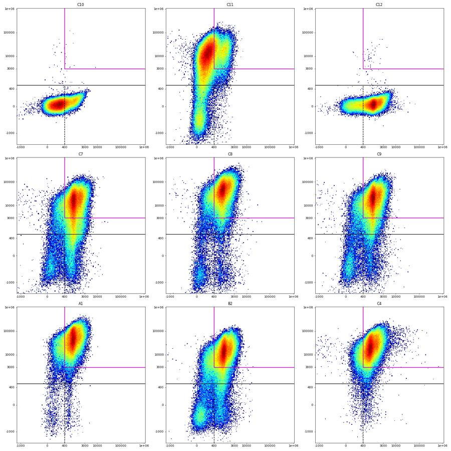
114
tool call · Bash
cat > flags.py <<'EOF'
from load import *
D = pickle.load(open('dfs.pkl','rb')); M=pickle.load(open('memb.pkl','rb'))
lay=pd.read_csv('/task/inputs/plate_layout.csv'); q=pd.read_pickle('qc.pkl').set_index('well')
bw=0.25; bins=np.arange(0,41.5,bw); rows=[]
def disturbed(w):
df=D[w]; t=df.Time.values
idx=np.clip(np.digitize(t,bins)-1,0,len(bins)-2)
h=np.bincount(idx,minlength=len(bins)-1); med=np.median(h[4:140])
fmed=df['FSC-A'].groupby(idx).median().reindex(range(len(bins)-1)); tr=fmed.rolling(41,center=True,min_periods=5).median()
bad=(h<0.5*med)|(h>1.75*med)|((fmed/tr-1).abs()>0.25).values
bad=bad|np.roll(bad,1)|np.roll(bad,-1)
return 100*bad.mean(), 100*bad[idx].mean()
for _,r in lay.iterrows():
w=r.well; df=D[w]; m=M[w]; x=q.loc[w]; t=df.Time.values
bt,be=disturbed(w)
sc=m['Single_Cells'].sum()
base=(f"{len(df)} events over {t.max():.1f} s; median rate {x.med_rate:.0f} ev/s, rate CV {x.cv:.2f}; {bt:.0f}% of 0.25-s time bins disturbed "
f"(rate <50% or >175% of median, or FSC-A median off trend by >25%), max inter-event gap {x.maxgap:.2f} s; "
f"across 4-s windows Live {x.live_rng}% and Late_apoptosis {x.late_rng}% of Single_Cells; Single_Cells {sc}")
usable,cat='yes','ok'; extra=''
if w=='C1':
usable,cat='no','clog_or_interrupted_flow'
n5=(t<5).sum(); n10=(t<10).sum()
extra=(f" UNSTABLE FLOW: only {n5} events in the first 5 s and {n10} in the first 10 s (other wells ~20000-50000 per 5 s), then bursts between ~0 and ~20000 ev/s; "
f"8 inter-event gaps >0.1 s; SSC-A clipped at -65536 in 0.70% of events (plate median 0.01%); SSC-A median 160912 vs 135730 in replicate C3; gate fractions drift with the flow, "
f"and excluding disturbed bins shifts Single_Cells by 9.4 and Cells by 4.7 percentage points.")
elif w=='C2':
usable,cat='no','clog_or_interrupted_flow'
n5=(t<5).sum()
extra=(f" UNSTABLE FLOW: only {n5} events in the first 5 s, stable rate not reached until ~22 s, with surges to ~17000 ev/s and drops to <2500 ev/s; "
f"10 inter-event gaps >0.1 s; SSC-A clipped at -65536 in 0.48% of events (plate median 0.01%); SSC-A median 157867 vs 135730 in replicate C3; "
f"excluding disturbed bins shifts Single_Cells by 2.3 and Caspase_pos by 2.3 percentage points.")
else:
if w in('A7','B8'):
i=np.where(np.diff(t)<0)[0][0]+1
extra+=f" Time stamps restart once: the first {i} events ({100*i/len(t):.1f}%) are stamped {t[:i].min():.2f}-{t[:i].max():.2f} s before the clock starts again at 0.01 s; their scatter and fluorescence match the rest of the file, so they were kept."
if x.tail_s>1.0:
extra+=f" Event rate tails off in the last {x.tail_s:.1f} s ({x.tail_ev} events, {x.tail_pct:.2f}% of file, Cells {x.tail_cells_pct}% vs {x.all_cells_pct}% overall): sample nearly exhausted at the very end, too few events to change results."
if w in('C7','C8','C9','C10','C11'):
extra+=f" Brief flow dropouts ({int(x.gaps_gt100ms)} gaps >0.1 s, {be:.0f}% of events in disturbed bins), but removing those bins changes every gate percentage by <0.5 percentage points."
if r.control_type=='unstained': extra+=f" Control as expected: RL3-A median {df['RL3-A'][m['Single_Cells']].median():.0f}, BL1-A median {df['BL1-A'][m['Single_Cells']].median():.0f} (no dye signal)."
if r.control_type=='viability_dye_only': extra+=f" Control as expected: Zombie NIR present (RL3-A median {df['RL3-A'][m['Single_Cells']].median():.0f}), BL1-A at unstained level (median {df['BL1-A'][m['Single_Cells']].median():.0f})."
if r.control_type=='caspase_dye_only': extra+=f" Control as expected: CellEvent present (BL1-A median {df['BL1-A'][m['Single_Cells']].median():.0f}), RL3-A at unstained level (median {df['RL3-A'][m['Single_Cells']].median():.0f})."
if r.control_type=='transduction_gfp':
b=df['BL1-A'][m['Single_Cells']]
extra+=f" GFP visible but rare: {100*(b>1e4).mean():.2f}% of Single_Cells have BL1-A >10000 (other stained wells <=0.03%); {int((df['BL1-A']>=1048575).sum())} events saturate BL1-A."
rows.append(dict(file=r.file,well=w,usable=usable,reason_category=cat,evidence=base+'.'+extra))
f=pd.DataFrame(rows,columns=['file','well','usable','reason_category','evidence'])
f.to_csv('/task/outputs/flags.csv',index=False)
print(f.usable.value_counts(), len(f))
for w in ['C1','C2','A7','C8','C4','C11','B9']: print(w, f[f.well==w].evidence.iloc[0],'\n')
EOF
python flags.py115
tool output
usable yes 34 no 2 Name: count, dtype: int64 36 C1 250794 events over 40.7 s; median rate 5280 ev/s, rate CV 0.84; 93% of 0.25-s time bins disturbed (rate <50% or >175% of median, or FSC-A median off trend by >25%), max inter-event gap 1.28 s; across 4-s windows Live 1.5-4.7% and Late_apoptosis 61.5-86.6% of Single_Cells; Single_Cells 124864. UNSTABLE FLOW: only 259 events in the first 5 s and 7414 in the first 10 s (other wells ~20000-50000 per 5 s), then bursts between ~0 and ~20000 ev/s; 8 inter-event gaps >0.1 s; SSC-A clipped at -65536 in 0.70% of events (plate median 0.01%); SSC-A median 160912 vs 135730 in replicate C3; gate fractions drift with the flow, and excluding disturbed bins shifts Single_Cells by 9.4 and Cells by 4.7 percentage points. C2 305451 events over 40.9 s; median rate 8282 ev/s, rate CV 0.55; 45% of 0.25-s time bins disturbed (rate <50% or >175% of median, or FSC-A median off trend by >25%), max inter-event gap 0.41 s; across 4-s windows Live 3.6-6.5% and Late_apoptosis 77.2-86.3% of Single_Cells; Single_Cells 155561. UNSTABLE FLOW: only 504 events in the first 5 s, stable rate not reached until ~22 s, with surges to ~17000 ev/s and drops to <2500 ev/s; 10 inter-event gaps >0.1 s; SSC-A clipped at -65536 in 0.48% of events (plate median 0.01%); SSC-A median 157867 vs 135730 in replicate C3; excluding disturbed bins shifts Single_Cells by 2.3 and Caspase_pos by 2.3 percentage points. A7 282723 events over 40.6 s; median rate 7086 ev/s, rate CV 0.16; 7% of 0.25-s time bins disturbed (rate <50% or >175% of median, or FSC-A median off trend by >25%), max inter-event gap 0.07 s; across 4-s windows Live 6.7-7.9% and Late_apoptosis 77.3-80.1% of Single_Cells; Single_Cells 138022. Time stamps restart once: the first 3638 events (1.3%) are stamped 3.41-3.96 s before the clock starts again at 0.01 s; their scatter and fluorescence match the rest of the file, so they were kept. C8 214991 events over 40.8 s; median rate 5762 ev/s, rate CV 0.23; 13% of 0.25-s time bins disturbed (rate <50% or >175% of median, or FSC-A median off trend by >25%), max inter-event gap 0.32 s; across 4-s windows Live 6.3-7.6% and Late_apoptosis 76.8-79.0% of Single_Cells; Single_Cells 98500. Event rate tails off in the last 2.3 s (1857 events, 0.86% of file, Cells 34.7% vs 57.6% overall): sample nearly exhausted at the very end, too few events to change results. Brief flow dropouts (4 gaps >0.1 s, 7% of events in disturbed bins), but removing those bins changes every gate percentage by <0.5 percentage points. C4 230134 events over 41.0 s; median rate 5794 ev/s, rate CV 0.08; 2% of 0.25-s time bins disturbed (rate <50% or >175% of median, or FSC-A median off trend by >25%), max inter-event gap 0.01 s; across 4-s windows Live 1.0-1.4% and Late_apoptosis 84.5-87.4% of Single_Cells; Single_Cells 123393. GFP visible but rare: 0.22% of Single_Cells have BL1-A >10000 (other stained wells <=0.03%); 30 events saturate BL1-A. C11 364071 events over 40.9 s; median rate 9400 ev/s, rate CV 0.31; 24% of 0.25-s time bins disturbed (rate <50% or >175% of median, or FSC-A median off trend by >25%), max inter-event gap 0.14 s; across 4-s windows Live 13.9-15.4% and Late_apoptosis 17.0-19.7% of Single_Cells; Single_Cells 155948. Brief flow dropouts (3 gaps >0.1 s, 19% of events in disturbed bins), but removing those bins changes every gate percentage by <0.5 percentage points. Control as expected: Zombie NIR present (RL3-A median 8342), BL1-A at unstained level (median 196). B9 219409 events over 41.0 s; median rate 5686 ev/s, rate CV 0.10; 5% of 0.25-s time bins disturbed (rate <50% or >175% of median, or FSC-A median off trend by >25%), max inter-event gap 0.01 s; across 4-s windows Live 3.9-4.7% and Late_apoptosis 80.7-82.8% of Single_Cells; Single_Cells 113426. Event rate tails off in the last 1.5 s (2368 events, 1.08% of file, Cells 45.9% vs 62.5% overall): sample nearly exhausted at the very end, too few events to change results.
117
tool call · Write
{
"file_path": "/task/outputs/notes.md",
"content": "# Gating notes \u2014 Caspase_KO_RNAswap-rep2 (36 wells, one gate set, raw data)\n\nAll gates are in `gates.xml` (FlowKit 1.2.3, GatingML 2.0), every dimension `uncompensated`. Scatter gates are on linear raw values; the three fluorescence gates are on a logicle axis (T = 1048576, W = 1.0, M = 4.5, A = 0). Values below are raw channel units. `counts.csv` is `gate_sample` output of the reloaded `gates.xml`.\n\n| Gate | Shape | Boundaries | Why |\n|---|---|---|---|\n| Cells | polygon, FSC-A \u00d7 SSC-A | FSC-A \u2265 70,000; both axes \u2264 1,000,000; fan-shaped sides | FSC-A is bimodal in every well: debris peak at 25\u201360k (trigger 25k), valley at ~70\u201385k, cell peak at ~120k. The lower-right side stays below the low-SSC cluster (FSC 100\u2013300k, SSC 30\u2013150k), which back-gating shows is the Zombie-negative intact cells. Off-scale events (1,048,575) are excluded. Keeps 58\u201366 % of events. |\n| Single_Cells | polygon, SSC-H \u00d7 SSC-A | band SSC-A \u2248 0.92\u20131.43 \u00d7 SSC-H | SSC-A/SSC-H peaks at ~1.1 with a one-sided tail to >2 (aggregates). There is no valley, so the cut at ~1.4 is a judgement. Keeps 73\u201385 % of Cells. |\n| Live | rectangle, BL1-A \u00d7 RL3-A | RL3-A < 600; BL1-A unbounded (\u2212200,000 to 2,000,000) | In C11 the Zombie-negative cluster is centred at about \u2212150 and spans about \u22121,000 to +500; unstained C10 ends at 280 (99.9th percentile). Lower edge is far below the data minimum (\u221265,536), so negative events are kept. |\n| Caspase_pos | rectangle, BL1-A \u00d7 RL3-A | BL1-A \u2265 400; RL3-A as Live | Live cells are bimodal on BL1-A in every stained well: negatives at ~50, positives at ~650, minimum at 350\u2013400. C11 live cells: 97 % below 400. C12 is bimodal with the same break. |\n| Late_apoptosis | polygon (4 vertices), BL1-A \u00d7 RL3-A | BL1-A \u2265 400 and RL3-A \u2265 3,000, open to the top and right | Same BL1-A edge as Caspase_pos. 3,000 is the lower limit of the dense Zombie-bright cluster; RL3-A 600\u20133,000 is left unassigned as \"intermediate\", as the strategy describes. |\n\n## Things to know when reading the counts\n- **RL3-A has no valley above the negative cluster.** Density falls smoothly from the negative cluster into a ramp up to the bright peak (~20,000). The Live upper edge is therefore the most sensitive boundary: moving it from 600 to 300 or 1,000 changes Live by roughly \u00b110\u201325 % (relative) in most wells. The 3,000 Late_apoptosis edge is likewise a judgement; 600\u20133,000 holds 3\u201316 % of singlets.\n- **CellEvent-positive is dim and narrow** (about +750 units over unstained, not decades). Dead cells are autofluorescent on BL1-A, so on raw data the Late_apoptosis gate has a background: in C11 (no CellEvent) 18 % of singlets still fall in it, versus 65\u201389 % in fully stained wells. The stained main cluster (BL1-A ~1,000) is clearly to the right of C11's (~250), but Late_apoptosis counts carry this background.\n- **C10 and C12 have no Zombie NIR**, so all their singlets are \"Live\"; their Caspase_pos values (24 % and 84 %) include dead cells and are not comparable with stained wells.\n- **C4\u2013C6:** BL1-A includes GFP, so Caspase_pos and Late_apoptosis there are not caspase-specific. GFP-bright events are rare (0.2 % of singlets above 10,000).\n- SSC-A is off-scale in 1.2\u20134.3 % of all events in every well (large Zombie-bright aggregates); these are outside Cells.\n\n## Flags\n- **C1, C2 \u2014 not usable, `clog_or_interrupted_flow`.** C1: 259 events in the first 5 s, then bursts between ~0 and ~20,000 ev/s (rate CV 0.84 against ~0.1 for a normal well; 93 % of 0.25-s bins disturbed). C2: 504 events in the first 5 s, unstable until ~22 s (CV 0.55; 45 % of bins disturbed). Gate percentages drift with the flow in both. This leaves construct 3945_3503 with one usable replicate (C3).\n- **All other 34 wells usable.** Noted in `flags.csv` but not flagged, because removing the affected time bins changes no gate percentage by more than 0.5 points:\n - C7\u2013C11: brief flow dropouts (13\u201324 % of time bins disturbed).\n - B1, B9, B11, C5, C6, C8: event rate tails off in the last 1.2\u20132.3 s (\u2264 1.1 % of events).\n - A7, B8: the first 1.3 % / 2.0 % of events carry time stamps of 3.4\u20133.96 s before the clock restarts at 0.\n\n## Deviations from `gating_strategy.md`\nNone in hierarchy, channels or shapes. Late_apoptosis is a polygon with axis-parallel edges (a rectangle drawn as a polygon). Counts from FlowKit were cross-checked against an independent raw-value calculation: fluorescence gates agree exactly; polygon gates differ by 0\u20135 events per well (edge-inclusion convention).\n"
}118
tool output
File created successfully at: /task/outputs/notes.md (file state is current in your context — no need to Read it back)
119
tool call · Bash
python - <<'EOF'
import pandas as pd, flowkit as fk, numpy as np, pickle
c=pd.read_csv('/task/outputs/counts.csv'); f=pd.read_csv('/task/outputs/flags.csv')
print(c.shape, list(c.columns), c.population.value_counts().to_dict(), c.file.nunique())
print(c.dtypes.to_dict()); print(c.pct_of_parent.min(), c.pct_of_parent.max())
print(f.shape, list(f.columns), ((f.usable=='yes')==(f.reason_category=='ok')).all(), f[f.usable=='no'][['well','reason_category']].values.tolist())
lay=pd.read_csv('/task/inputs/plate_layout.csv'); print(set(c.file)==set(lay.file), list(f.file)==list(lay.file))
gs=fk.parse_gating_xml('/task/outputs/gates.xml'); print(gs.get_gate_ids())
for gid,path in gs.get_gate_ids():
g=gs.get_gate(gid,gate_path=path); print(gid, type(g).__name__, [(d.id,d.compensation_ref,d.transformation_ref) for d in g.dimensions])
# re-gate two files from the saved xml and compare with counts.csv
for w in ['A1','C12']:
fn=f'Caspase_KO_RNAswap-rep2_caspase_Group_{w}.fcs'
r=gs.gate_sample(fk.Sample('/task/inputs/raw/'+fn,ignore_offset_error=True))
for gid,path in gs.get_gate_ids():
assert int(r.get_gate_membership(gid,gate_path=path).sum())==int(c[(c.well==w)&(c.population==gid)]['count'].iloc[0])
print('recount ok')
# sensitivity figures quoted in notes
D=pickle.load(open('dfs.pkl','rb')); M=pickle.load(open('memb.pkl','rb'))
rel=[];mid=[]
for w in M:
if w in('C10','C12'): continue
r=D[w]['RL3-A'][M[w]['Single_Cells']]; n6=(r<600).sum(); rel.append(((r<300).sum()/n6-1, (r<1000).sum()/n6-1)); mid.append(100*((r>=600)&(r<3000)).mean())
rel=np.array(rel)*100; print('Live rel change at 300:',np.percentile(rel[:,0],[0,25,50,75,100]).round(0),'at 1000:',np.percentile(rel[:,1],[0,25,50,75,100]).round(0)); print('600-3000 % of singlets',min(mid),max(mid))
late=c[(c.population=='Late_apoptosis')&~c.well.isin(['C10','C11','C12'])].pct_of_parent; print('late range',late.min(),late.max())
EOF
wc -w /task/outputs/notes.md; ls -la /task/outputs120
tool output
(180, 6) ['file', 'well', 'population', 'count', 'parent_population', 'pct_of_parent'] {'Cells': 36, 'Single_Cells': 36, 'Live': 36, 'Caspase_pos': 36, 'Late_apoptosis': 36} 36
{'file': dtype('O'), 'well': dtype('O'), 'population': dtype('O'), 'count': dtype('int64'), 'parent_population': dtype('O'), 'pct_of_parent': dtype('float64')}
0.0106 99.9614
(36, 5) ['file', 'well', 'usable', 'reason_category', 'evidence'] True [['C1', 'clog_or_interrupted_flow'], ['C2', 'clog_or_interrupted_flow']]
True True
[('Cells', ('root',)), ('Single_Cells', ('root', 'Cells')), ('Live', ('root', 'Cells', 'Single_Cells')), ('Caspase_pos', ('root', 'Cells', 'Single_Cells', 'Live')), ('Late_apoptosis', ('root', 'Cells', 'Single_Cells'))]
Cells PolygonGate [('FSC-A', 'uncompensated', None), ('SSC-A', 'uncompensated', None)]
Single_Cells PolygonGate [('SSC-H', 'uncompensated', None), ('SSC-A', 'uncompensated', None)]
Live RectangleGate [('BL1-A', 'uncompensated', 'logicle'), ('RL3-A', 'uncompensated', 'logicle')]
Caspase_pos RectangleGate [('BL1-A', 'uncompensated', 'logicle'), ('RL3-A', 'uncompensated', 'logicle')]
Late_apoptosis PolygonGate [('BL1-A', 'uncompensated', 'logicle'), ('RL3-A', 'uncompensated', 'logicle')]
recount ok
Live rel change at 300: [-42. -23. -18. -14. -10.] at 1000: [11. 16. 21. 27. 58.]
600-3000 % of singlets 2.0478280369041517 15.77755392684706
late range 64.6129 89.1105
766 /task/outputs/notes.md
total 56
drwxr-xr-x 2 root root 4096 Nov 10 19:24 .
drwxr-xr-x 5 root root 4096 Nov 10 19:13 ..
-rw-r--r-- 1 root root 14836 Nov 10 19:20 counts.csv
-rw-r--r-- 1 root root 16332 Nov 10 19:23 flags.csv
-rw-r--r-- 1 root root 5860 Nov 10 19:20 gates.xml
-rw-r--r-- 1 root root 4543 Nov 10 19:24 notes.md122
agent
Status: all four deliverables are written and validated; making one last correction to a sensitivity figure in `notes.md`.
123
tool call · Edit
{
"replace_all": false,
"file_path": "/task/outputs/notes.md",
"old_string": "moving it from 600 to 300 or 1,000 changes Live by roughly \u00b110\u201325 % (relative) in most wells. The 3,000 Late_apoptosis edge is likewise a judgement; 600\u20133,000 holds 3\u201316 % of singlets.",
"new_string": "moving it from 600 to 300 lowers Live by 10\u201342 % (relative; median 18 %), and moving it to 1,000 raises Live by 11\u201358 % (median 21 %). The 3,000 Late_apoptosis edge is likewise a judgement; 600\u20133,000 holds 2\u201316 % of singlets."
}124
tool output
The file /task/outputs/notes.md has been updated successfully. (file state is current in your context — no need to Read it back)
125
tool call · Bash
python - <<'EOF'
import pandas as pd
c=pd.read_csv('/task/outputs/counts.csv')
p=c.pivot(index='well',columns='population',values='pct_of_parent')
s=p.drop(['C10','C11','C12'])
for k in ['Cells','Single_Cells','Live','Caspase_pos','Late_apoptosis']: print(k, s[k].min().round(1), s[k].median().round(1), s[k].max().round(1))
print(p.loc[['C10','C11','C12']].round(1))
EOF126
tool output
Cells 57.6 62.9 66.3 Single_Cells 75.7 81.1 85.4 Live 1.0 5.1 14.8 Caspase_pos 23.3 37.3 73.1 Late_apoptosis 64.6 80.4 89.1 population Caspase_pos Cells Late_apoptosis Live Single_Cells well C10 24.0 61.8 0.0 100.0 77.2 C11 3.1 58.8 18.2 14.3 72.9 C12 83.9 60.8 0.0 99.9 76.8
127
agent
All 36 wells are gated with one gate set, and the four deliverables are in `/task/outputs/`. Two wells, C1 and C2, are flagged as unusable; the other 34 are usable.
`gates.xml` reloads with `flowkit.parse_gating_xml`, and `counts.csv` (180 rows) is the output of the reloaded gates.
## Gates (raw units, uncompensated)
| Population | Boundary | Basis |
|---|---|---|
| `Cells` | FSC-A ≥ 70,000, off-scale events excluded | valley between the debris peak (25–60k) and the cell peak (~120k) |
| `Single_Cells` | SSC-A ≈ 0.92–1.43 × SSC-H | diagonal band; there is no valley, so the upper cut is a judgement |
| `Live` | RL3-A < 600, BL1-A unbounded | top of the Zombie-negative cluster in C11; unstained C10 ends at ~280 |
| `Caspase_pos` | BL1-A ≥ 400 | minimum between the two BL1-A modes of live cells (~50 and ~650); same break in C12 |
| `Late_apoptosis` | BL1-A ≥ 400 and RL3-A ≥ 3,000 | lower limit of the dense Zombie-bright cluster |
Across the 33 fully stained wells:
| Population | % of parent, median (range) |
|---|---|
| `Cells` | 63 (58–66) |
| `Single_Cells` | 81 (76–85) |
| `Live` | 5.1 (1.0–14.8) |
| `Caspase_pos` | 37 (23–73) |
| `Late_apoptosis` | 80 (65–89) |
## Flags
- **C1 and C2 are not usable (`clog_or_interrupted_flow`).** C1 recorded 259 events in the first 5 s and then alternated between near-zero and ~20,000 events/s. C2 recorded 504 events in the first 5 s and was unstable until about 22 s. Gate percentages drift with the flow in both, which leaves construct 3945_3503 with one usable replicate (C3).
- **Three minor anomalies are noted in `flags.csv` but not flagged.** Removing the affected time bins changes no gate percentage by more than 0.5 points.
- C7–C11 have brief flow dropouts.
- B1, B9, B11, C5, C6 and C8 tail off in the last 1.2–2.3 s (about 1% of events or less).
- A7 and B8 have a one-off time-stamp restart covering the first 1.3% and 2.0% of events.
- **Controls behave as labelled.** C10, C11 and C12 show the expected staining. GFP is detectable in C4–C6 but rare, at about 0.2% of singlets.
## Caveats on the counts
- **The `Live` edge is the most sensitive boundary.** RL3-A has no valley above the negative cluster. Moving the edge from 600 to 300 lowers `Live` by a median of 18%, and moving it to 1,000 raises it by a median of 21%.
- **`Late_apoptosis` carries an autofluorescence background.** The CellEvent signal is dim, and dead cells are autofluorescent on BL1-A. In C11, which has no CellEvent, 18% of singlets still fall in the gate.
- **`Caspase_pos` in C10 and C12 is not comparable with stained wells.** These wells have no Zombie NIR, so all their singlets count as `Live`, dead cells included.
- **The 3,000 edge for `Late_apoptosis` is my judgement.** Events with RL3-A between 600 and 3,000 (2–16% of singlets) are in neither `Live` nor `Late_apoptosis`, as the strategy describes.
There are no deviations from `gating_strategy.md` in hierarchy, channels or shapes; `notes.md` has the full placement rationale.
Files in `/task/outputs/`:
- `gates.xml`
- `counts.csv`
- `flags.csv`
- `notes.md`
final result
All 36 wells are gated with one gate set, and the four deliverables are in `/task/outputs/`. Two wells, C1 and C2, are flagged as unusable; the other 34 are usable. `gates.xml` reloads with `flowkit.parse_gating_xml`, and `counts.csv` (180 rows) is the output of the reloaded gates. ## Gates (raw units, uncompensated) | Population | Boundary | Basis | |---|---|---| | `Cells` | FSC-A ≥ 70,000, off-scale events excluded | valley between the debris peak (25–60k) and the cell peak (~120k) | | `Single_Cells` | SSC-A ≈ 0.92–1.43 × SSC-H | diagonal band; there is no valley, so the upper cut is a judgement | | `Live` | RL3-A < 600, BL1-A unbounded | top of the Zombie-negative cluster in C11; unstained C10 ends at ~280 | | `Caspase_pos` | BL1-A ≥ 400 | minimum between the two BL1-A modes of live cells (~50 and ~650); same break in C12 | | `Late_apoptosis` | BL1-A ≥ 400 and RL3-A ≥ 3,000 | lower limit of the dense Zombie-bright cluster | Across the 33 fully stained wells: | Population | % of parent, median (range) | |---|---| | `Cells` | 63 (58–66) | | `Single_Cells` | 81 (76–85) | | `Live` | 5.1 (1.0–14.8) | | `Caspase_pos` | 37 (23–73) | | `Late_apoptosis` | 80 (65–89) | ## Flags - **C1 and C2 are not usable (`clog_or_interrupted_flow`).** C1 recorded 259 events in the first 5 s and then alternated between near-zero and ~20,000 events/s. C2 recorded 504 events in the first 5 s and was unstable until about 22 s. Gate percentages drift with the flow in both, which leaves construct 3945_3503 with one usable replicate (C3). - **Three minor anomalies are noted in `flags.csv` but not flagged.** Removing the affected time bins changes no gate percentage by more than 0.5 points. - C7–C11 have brief flow dropouts. - B1, B9, B11, C5, C6 and C8 tail off in the last 1.2–2.3 s (about 1% of events or less). - A7 and B8 have a one-off time-stamp restart covering the first 1.3% and 2.0% of events. - **Controls behave as labelled.** C10, C11 and C12 show the expected staining. GFP is detectable in C4–C6 but rare, at about 0.2% of singlets. ## Caveats on the counts - **The `Live` edge is the most sensitive boundary.** RL3-A has no valley above the negative cluster. Moving the edge from 600 to 300 lowers `Live` by a median of 18%, and moving it to 1,000 raises it by a median of 21%. - **`Late_apoptosis` carries an autofluorescence background.** The CellEvent signal is dim, and dead cells are autofluorescent on BL1-A. In C11, which has no CellEvent, 18% of singlets still fall in the gate. - **`Caspase_pos` in C10 and C12 is not comparable with stained wells.** These wells have no Zombie NIR, so all their singlets count as `Live`, dead cells included. - **The 3,000 edge for `Late_apoptosis` is my judgement.** Events with RL3-A between 600 and 3,000 (2–16% of singlets) are in neither `Live` nor `Late_apoptosis`, as the strategy describes. There are no deviations from `gating_strategy.md` in hierarchy, channels or shapes; `notes.md` has the full placement rationale. Files in `/task/outputs/`: - `gates.xml` - `counts.csv` - `flags.csv` - `notes.md`